本次只跑 1 个 plane / 1 条 ring、均匀 tiled 写、 S0 与 S1。REQ / RSP / DAT 上下环口独立。 每 core 20000 笔 WriteNoSnp （请求量 ×10），每笔 2 个 WriteData flit。 HA 回 RSP / Comp 时延 0（无 HA think time） 拍。
eject_bw=2 让加价精确归零、吞吐升到 96.49%，
而 buffer 从 12 加深到 64 只压到 782（加深到 32 反而更差）：
加容量治不了，加速率才治得了。
另外两条候选被否掉：I-tag 的空转不是浪费（休眠它省 973 拍空转、
却多付 1566 拍加价，吞吐反降到 94.92%）、
也不是供给不足（core_outstanding 加到 256 使吞吐崩到
80.24%）。
含义：出厂规格下可达上限约 96.5%，留给拥塞控制去争的总带宽只有 0.8 个点，
阶段三的带宽线应靠「不弄丢」而非「抬上去」来过。见 3.1.9。inj_sel 只在一个端口组里有多于一个队列时才重排候选；
端口按方向拆开后每组只剩一个队列，free_slot 与 rr
逐位相同。它修的是「一个端口伺候两个方向」这个耦合，
而真实硬件里该耦合不存在。见 3.1.6（已作废）与 3.1.8。e_tag，
E-tag 只拿到几个额外 buffer 表项而没有规定要求的「挤占普通 flit 下环权」
的优先级 —— 而那条正是「确保不在环上无限循环」的依据。
两者都已按规定语义补全（I-tag 定向上游 + 单槽预约 + 上环即释放；
E-tag 首次下环失败即打标 + 下环仲裁最高优先），
并有三条回归钉住。见 3.1.7。dfc_margin 都需要重新扫（S22 大概要往更激进的方向走，
margin 从 4 降到 0~2），本轮先只交阶段一的结论。
下面两条数值仍是本次官方 K 的实测，但它们是未重调的工作点，
不应读作最终结论。itag_mode=reserve 让 S0 不加任何流控就把最坏方向失败比从
broadcast 实现下的 5.776 降到
2.58 —— 因为 I-tag 的旗子本来就是按方向挂的
（键是 plane / 方向 / VC），一个核在 CW 上被饿住，让出的气泡就出现在 CW 上，
补偿正好落在缺的那个方向，而这恰是 dir_split 想用源端限速去做的事。
| 项目 | 取值 | 说明 |
|---|---|---|
| 节点数 / plane 数 | 20 / 1 | 一个双向闭合 full ring |
| AI core | 10 个：C0, C2, C4, C6, C8, C10, C12, C14, C16, C18 | 写发起方（CHI RN） |
| memory 节点 | 8 个：M1, M3, M5, M7, M11, M13, M15, M17 | 写目的地（completer） |
| 非终端节点 | N9, N19 | 在环上转发，但既不发起也不接收写 |
| 路由 | 最短路（链路时延之和；时延平局再比跳数，再平局 CW） | core→mem 与 mem→core 同一规则；当前 link_lats 上与跳数最短重合 |
| plane 选择 | least_occupied | 单平面，无 plane 选择 |
| 每 core outstanding | 128 | 同时在飞的写事务上限 |
| 每 completer 请求 tracker | 512 | 表项用尽即回 RetryAck，靠 PCrdGrant 重发 |
| CHI VC | REQ / RSP / DAT | REQ、RSP、DAT 三条独立 VC，各自独立信用 |
| hop 容量 | 120 flit/cycle | 20 节点 × 2 方向 × 1 plane × 3 VC，σ=1 |
| 端口 | inject 1 / leave 1（每 node 每 plane 每 VC） | REQ / RSP / DAT 各有独立上下环口，互不占槽 |
| 上环端口分组 | 每方向一组 × 3 VC = 每 node 6 个上环口 | full ring：CW / CCW 各自一组端口，每组含 REQ / RSP / DAT，每口 1 flit/cycle。下环侧不拆，仍是每 (node, VC) 一个两写一读 buffer、每拍读 1 flit |
| 上环队列 | 12 深共享 FIFO + 每向 8 深 inject Q | 每 (node, plane, VC) 一套：两个环方向共用那个 FIFO，其后每方向各一个 inject Q 并各自接一个上环口 |
| 下环队列深度 | 12 | 每 (node, plane, VC)；两写一读：该 VC 两个方向可同拍各写入 1 flit，PE 每拍读 1 flit |
| I-tag 门限 t_inj | 4 | 限制注入饥饿时长 |
| E-tag 门限 t_xfer | 1 | 限制偏转次数 |
| 写激励 | 128B burst / 4096B stride / 64KB tile | 1 flit = 64B，每笔 WriteData ×2；地址哈希已把 8 个 mem 均衡 |
| HA RSP 时延 | 0（无 HA think time） | 写请求到达 memory 后，DBIDResp / RetryAck / Comp 各自独立抽 |
| 拥塞总线时延 | 30 拍 | S1 / S15 专用广播，不占环上 hop；窗口 64 拍 |
| 无向边 | hop 时延（拍） | 备注 |
|---|---|---|
| C0 — M1 | 2 | |
| M1 — C2 | 2 | |
| C2 — M3 | 2 | |
| M3 — C4 | 3 | |
| C4 — M5 | 1 | |
| M5 — C6 | 3 | |
| C6 — M7 | 1 | |
| M7 — C8 | 1 | |
| C8 — N9 | 2 | |
| N9 — C10 | 4 | |
| C10 — M11 | 1 | |
| M11 — C12 | 1 | |
| C12 — M13 | 3 | |
| M13 — C14 | 1 | |
| C14 — M15 | 3 | |
| M15 — C16 | 2 | |
| C16 — M17 | 2 | |
| M17 — C18 | 2 | |
| C18 — N19 | 3 | |
| N19 — C0 | 3 | 闭合边（N19 ↔ C0） |
一笔写 = REQ → DBIDResp → WriteData×2 → Comp。 per-core 写带宽 = 争用窗口内成功上环的 WriteData flit / cycle。
地址走 tile × 64KB + (i mod 16) × 4KB，interleave 已均衡。
completer 侧每条 RSP（DBIDResp / RetryAck / Comp）独立抽
0（无 HA think time） 拍；同一笔事务在 S0 / S1 抽到同一份时延。
本轮 1 plane、K = 20000。
dat inject Q（20–70% 满），实测各方向 Q 满的比例最高只有 20.85%（落区间内），而且 dat 那一档只有 20.85%。真正打满的是 rsp 侧：mem 节点的 RSP 共享 FIFO 最高 99.8% 时间是满的。更新后的认识：吃紧的不是核发 WriteData，而是 HA 把 RSP 送上环 —— 详见 3.1.3。meta.stimulus_forecast，对照写在
meta.belief_update，前者不改。
验收口径：100 拍窗 CoV 尽量接近 0，且吞吐相对基线不下降超过 1%。 每 core outstanding = 128。
| 下界 | cycle | 含义 |
|---|---|---|
| LB_link 每 VC 独立链路 | 70000 | REQ/RSP/DAT 各占一条 VC，取三者最大 |
| LB_port 每 VC 独立端口 | 50000 | inject / leave 每 (node, plane, VC) 一口，三通道不再叠在一起 |
| LB_cut 割集 | 50000 | 跨割面的流量除以割面上的有向链路数 |
| LB_txn 事务串行链 | 89 | REQ→DBIDResp→WriteData→Comp 两个来回 |
| bound | 70000 | 以上取最大 |
makespan 下界 70000 拍，由 LB_link 决定， 即 最忙的那条有向链路上、DAT VC 的容量。
三条 VC 各有自己的上 / 下环端口，所以端口不再是最紧的资源， 反而是最忙那条 dat 链路绑定：14 对 (core, mem) 的 WriteData 要压在同一段 hop 上，每对每笔写 2 个 flit。
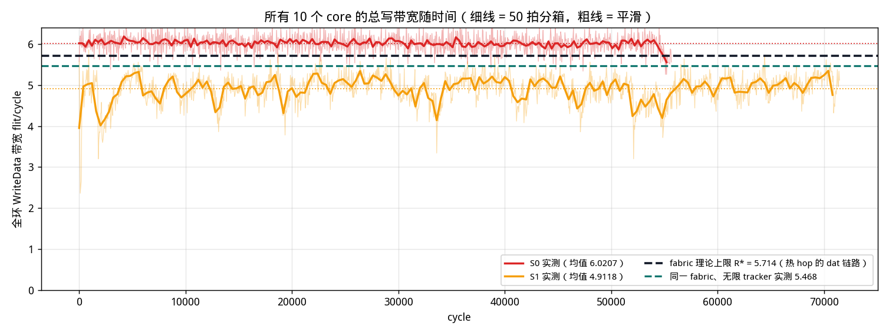
| 方案 | 窗内总带宽均值 | 全程总带宽 | 全程占 R* | p05 | p50 | p95 | 最低箱 | 最高箱 |
|---|---|---|---|---|---|---|---|---|
| S0 | 6.0207 | 5.4681 | 95.7% | 5.66 | 6.04 | 6.38 | 5.26 | 6.66 |
| S1 | 4.9118 | 4.6874 | 82.0% | 4.28 | 4.96 | 5.38 | 2.36 | 5.86 |
该和 R* 比的是全程总带宽：S0 = 5.4681 flit/cycle， 占 R* 95.7%。 下面先排除 fabric，再定位真正的瓶颈。
每节点每 VC 上环 1 flit/cycle、下环 1 flit/cycle （上环是两个方向共用那一个口，不是每方向 1；下环是 PE 每拍从该 VC 读 1 flit）。 把这条速率约束单独算成一个上限，要对四类口分别数：
| 受限的口 | 每拍总容量 | 每笔写要过几个 flit | 折算成 WriteData 上限 |
|---|---|---|---|
| core 上环 · dat（10 个核） | 10 | 2 | 10 flit/cycle |
| mem 下环 · dat（8 个 mem） | 8 | 2 | 8 flit/cycle（最紧） |
| mem 下环 · req（8 个 mem） | 8 | 1 | 16 flit/cycle |
| mem 上环 · rsp（8 个 mem） | 8 | 2（DBID + Comp） | 8 flit/cycle |
| core 下环 · rsp（10 个核） | 10 | 2（DBID + Comp） | 10 flit/cycle |
LB_port 报的
8.0 flit/cycle
（400000 flit ÷ 50000 拍）。为什么链路比端口紧：端口是「每个节点自己的 1 flit/cycle」， 10 个核分摊得开；而 14 对 (core, mem) 的 WriteData 必须挤过同一段 hop，那一段每拍也只有 1 flit/cycle。节点数多不解决单段拥塞。 下一节的实测占用率印证了这一点：端口最忙的也只到 68%。
按存储的计数反算每个 VC 端口的占用率（73152 拍、8 个 mem、10 个 core）：
| 端口 | 占用率 | 承载 |
|---|---|---|
| mem 下环 · req | 34.2% | 200000 REQ + 0 重发 |
| mem 下环 · dat | 68.4% | 400000 WriteData |
| core 下环 · rsp | 54.7% | DBID + Comp + RetryAck + PCrd |
| core 上环 · dat | 54.7% | 400000 WriteData |
| core 上环 · req | 27.3% | 200000 REQ + 0 重发 |
每 16 拍采一次全部 fabric FIFO 的占用（共
4572 个采样点）。满的比例是占用达到深度的采样点
占比，这才是判断「这一级是不是瓶颈」的量；平均占用只说明它平时存了多少。
188 个有深度的 FIFO 里，
84 个曾经满过。
| FIFO | 深度 | 实例数 | 平均占用 | 采样峰值 | 满的比例 | 曾满过的实例 |
|---|---|---|---|---|---|---|
| 上环共享 FIFO（两方向共用） · dat | 12 | 18 | 4.013 (33.44%) | 12 | 28.52% | 10 / 18 |
| 上环方向 inject Q · dat | 8 | 36 | 2.37 (29.63%) | 8 | 20.85% | 20 / 36 |
| 上环共享 FIFO（两方向共用） · rsp | 12 | 18 | 2.211 (18.43%) | 12 | 15.34% | 8 / 18 |
| 上环方向 inject Q · rsp | 8 | 36 | 1.686 (21.07%) | 8 | 11.24% | 16 / 36 |
| 上环方向 inject Q · req | 8 | 36 | 1.871 (23.39%) | 8 | 5.96% | 20 / 36 |
| 上环共享 FIFO（两方向共用） · req | 12 | 18 | 0.439 (3.66%) | 12 | 3.24% | 10 / 18 |
| 下环两写一读 buffer · dat | 12 | 8 | 0.765 (6.37%) | 11 | 0.0% | 0 / 8 |
| 下环两写一读 buffer · req | 12 | 8 | 0.049 (0.41%) | 3 | 0.0% | 0 / 8 |
| 下环两写一读 buffer · rsp | 12 | 10 | 0.634 (5.29%) | 11 | 0.0% | 0 / 10 |
真正会满的是另一头 —— 0、1、7、8、10、17、18 这几个 mem 节点的 RSP 上环队列：
| FIFO | 节点 | VC | 方向 | 深度 | 平均占用 | 满的比例 |
|---|---|---|---|---|---|---|
| 上环共享 FIFO（两方向共用） | 17 | rsp | — | 12 | 11.207 | 92.78% |
| 上环共享 FIFO（两方向共用） | 10 | dat | — | 12 | 10.722 | 87.51% |
| 上环共享 FIFO（两方向共用） | 7 | rsp | — | 12 | 10.599 | 86.4% |
| 上环共享 FIFO（两方向共用） | 18 | dat | — | 12 | 10.607 | 86.31% |
| 上环共享 FIFO（两方向共用） | 8 | dat | — | 12 | 10.659 | 86.13% |
| 上环共享 FIFO（两方向共用） | 0 | dat | — | 12 | 10.544 | 85.39% |
| 上环方向 inject Q | 17 | rsp | CW | 8 | 7.244 | 82.74% |
| 上环方向 inject Q | 10 | dat | CW | 8 | 6.972 | 78.89% |
| 上环方向 inject Q | 8 | dat | CCW | 8 | 6.963 | 78.52% |
| 上环方向 inject Q | 0 | dat | CW | 8 | 6.943 | 78.48% |
| 上环方向 inject Q | 18 | dat | CCW | 8 | 6.83 | 77.12% |
| 上环方向 inject Q | 7 | rsp | CW | 8 | 6.998 | 75.26% |
| 上环方向 inject Q | 1 | rsp | CCW | 8 | 6.418 | 62.4% |
| 上环共享 FIFO（两方向共用） | 1 | rsp | — | 12 | 7.248 | 52.25% |
这几个节点的 RSP 上环口几乎每一拍都在尝试上环，但赢不下来：
| mem 节点 | 成功上环 | 失败 | 上环成功率 | 每拍平均尝试次数 |
|---|---|---|---|---|
| 1 | 50000 | 73218 | 40.6% | 1.68 |
| 7 | 50000 | 74934 | 40.0% | 1.71 |
| 17 | 50000 | 73495 | 40.5% | 1.69 |
最后一列是尝试次数 ÷ makespan，不是「忙的拍数占比」， 所以它可以大于 1：上环端口按方向分成两组，同一拍两个方向各可以尝试一次， 该列的物理上限是 2.00。
link_by_vc 里 rsp 与 dat 同为 70000 拍
（见 3.1 的 R* 推导）：两条 VC 的热链路一样紧，所以两边都没有余量吸收
这种仲裁损失。PE 侧的 backlog 没有深度限制，只作对照：
| PE 侧队列 | 实例数 | 平均深度 | 采样峰值 |
|---|---|---|---|
| pe_pend · dat | 10 | 30.802 | 199 |
| pe_pend · rsp | 8 | 79.185 | 727 |
| pe_reqpend · req | 10 | 9126.956 | 19971 |
req 那一行深达上万，是闭环 workload 的正常现象
（每核 20000 笔写全部一次性排在核里，由 outstanding 上限
128 逐步放行），不是 fabric 压力。
但 rsp 那一行值得看：HA 生成响应的速度明显快过它上环的速度，
所以响应在 PE 侧又堆了一层。
短探测（不是官方 JSON；uniform 写、K=4000、seed 0、1 plane， 其余同官方 FABRIC，只扫 ha_track）：
| ha_track | 总写带宽 | 在飞事务平均驻留（拍） | retry/txn |
|---|---|---|---|
| 32 | 2.253 | 256.5 | 0.992 |
| 64 | 2.312 | 408.7 | 0.808 |
| 128 | 4.424 | 551.7 | 0.003 |
| 256 | 4.498 | 552.3 | 0.0 |
| ∞ | 4.498 | 552.3 | 0.0 |
这张探测表在官方 K 上偏乐观：它说 128 就到顶， 但官方 K = 20000 下 128 只跑到 3.04， 且峰值占用死死顶在 128（详见上一轮记录）。 原因是拐点跟 K 有关：短跑拥塞长不到稳态，128 够用； 官方 K 下稳态更深，∞ 参照峰值要 195 个表项。 按短跑定 tracker 尺寸会低估。
| ha_track | 总写带宽 | makespan | retry/txn | 峰值占用表项 | 占 ∞ 平台 |
|---|---|---|---|---|---|
| 32（历史） | 2.3848 | 167732 | 0.602 | 32 | 53% |
| 128（历史） | 3.04 | 131580 | 0.1078 | 128 | 67% |
| 256（旧 8+1 队列） | 4.5408 | 88090 | 0.0 | 195 | 100% |
| 512（本轮 12+8 队列） | 5.4681 | 73152 | 0.0 | 422 | 100% |
| ∞（参照） | 5.468 | 73152 | 0.0 | 422 | 100% |
tracker 曲线的形状是：32 → 128 只补回一部分 （2.3848 → 3.04）， 128 → 256 才走完剩下的 （3.04 → 4.5408）。 判断「够不够」的正确依据不是扫描曲线的拐点，而是 ∞ 参照在官方 K 上的峰值占用（这里是 422）—— 配额只要高过它，动力学就和无限一样。
剩下那个 5.468 的平台里，两级 buffer 只占一小部分：3.1.6 的因子实验 把仲裁器分离出去之后，上环队列 8+1 → 12+8 值 +4.00%、下环 4 → 12 深值 +0.95%， 而仲裁器一项就是 +13.04%。 下面是此前在旧 8+1 配置、∞ tracker、K=4000 下的单旋钮 历史消融；单独把任一级加深也都只在 ±1% 内动：
| 历史改动（旧 8+1，ha_track = ∞） | 总写带宽 |
|---|---|
| 基准（∞ tracker） | 4.498 |
| eject_depth 4 → 16 | 4.503 |
| inj_depth 8 → 32 | 4.498 |
| dir_inj_depth 1 → 4 | 4.544 |
| eject_bw 1 → 2 | 4.486 |
| core_outstanding 128 → 512 | 4.495 |
平台的成因是无缓存环的上环仲裁：在环 flit 优先，要上环的节点 只能挤进空隙。本轮最忙的 dat 段等效占用 95.7%（上一轮 80.1%、旧 8+1 为 79.7%）， 已经离 R* 假设的 100% 不远，但核每拍仍有约 1.758 次上环失败（上一轮 0.846、旧 8+1 为 0.867）—— 决定上环延迟的是空档的分布，而不是空档的总量。
本轮 3.1.3 把这句话的位置钉住了。此前几轮默认吃紧的是 「核把 WriteData 送上环」，但逐 FIFO 占用显示核的 dat 队列几乎是空的， 真正打满的是热 RSP 段起点那几个 mem 节点的 RSP 上环队列 （共享 FIFO 满的比例 ≈ 99.8%）。链路界里 rsp 与 dat 同为 70000 拍，两条 VC 一样紧；而 RSP 侧多了一条 dat 侧没有的 不利条件：HA 一有响应就想发（本轮 HA RSP 时延为 0），到达不受下游节流， 于是它的队列先被打满。
再往前一版三 VC 共享端口的 fabric（R* = 5.333、端口绑定、 平台 3.466、实测 2.541）说明的是另一件事：端口拆开抬高了 R* 与平台， 但在 32 tracker 下实测反而下降，因为 REQ 有专用端口后到达 HA 更快、 tracker 被打得更凶。加宽 fabric 必须和放开 tracker 一起做： 两件都做了之后，实测才从 2.541 / 2.3848 / 3.04 一路走到 5.4681。
这一小节是历史消融，两列都在 ha_track = 32 上测的， 和本轮的 512 个表项不是同一个工作点 —— 留在这里是因为它的结论仍然成立，而它的绝对数字不再描述本轮基线。 本轮沿用 HA RSP = 0。
那一轮把 completer 的 DBIDResp / RetryAck / Comp 从 U{4..64}（均值 34 拍/条，一笔写至少两条 ≈ 68 拍）改成 0， 预测是 T_hold 少掉约 68 拍、32 个 tracker 周转加快、吞吐往平台靠：
| 量（均为 ha_track = 32） | HA RSP U{4..64} | HA RSP 0 |
|---|---|---|
| S0 总写带宽 | 2.41 | 2.3848 |
| retry/txn | 0.5689 | 0.602 |
| outst_eff / 核 | 22.98 | 17.65 |
| T_hold（拍） | 190.7 | 148.0 |
| 无限 tracker 平台 | 4.514 | 4.5408 |
inj_sel 只在一个端口组里有多于一个队列时才会重排候选
（_board_one）。full ring 的上环端口本来就按方向分成两组，
每组各有 REQ / RSP / DAT，于是每个端口组只剩一个队列 ——
free_slot 仲裁器退化成空操作，与 rr 逐位相同
（已验证：thr 与 Jbin 五位小数全同）。
下面那个 +13.3% 的收益，是共享端口这个错误前提下的产物：
它修的是「一个端口要伺候两个方向、许诺错了就空转一拍」，
而真实硬件里这个耦合根本不存在。t_inj / t_xfer
不是绑定项这一条仍然成立。新的带宽结论见 3.1.8。任务书要求先调 buffer(FIFO) 大小、I-tag 门限 t_inj
和 E-tag 门限 t_xfer，把 S0 的总写带宽推向理论上限。
下面是短探测（K=2500、seed 0、1 plane、R* = 5.7117，
其余同官方 FABRIC）逐个旋钮的结果。
| 上环仲裁器 | 总写带宽 | 占 R* | CoV | ratio |
|---|---|---|---|---|
| rr（旧仲裁器） | 4.588 | 80.3% | 0.18040 | 1.00586 |
| free_slot（本轮） | 5.1986 | 91.0% | 0.21944 | 0.98619 |
inj_sel=free_slot 让仲裁器先读出链路这拍的空闲信号
（环上锁存器本来就有这个本地信号），再决定端口给谁。此前几轮是拿「本轮 vs 上一轮」的差来给 buffer 深度记功的， 但中间仲裁器也换了，那不是受控对比。三个因子各取两档全跑一遍 （K=3000）：
| 上环仲裁器 | 上环队列（共享+每向） | 下环 buffer 深 | 总写带宽 |
|---|---|---|---|
| rr | 8+1 | 4 | 4.5286 |
| rr | 8+1 | 12 | 4.5045 |
| rr | 12+8 | 4 | 4.591 |
| rr | 12+8 | 12 | 4.5889 |
| free_slot | 8+1 | 4 | 4.9558 |
| free_slot | 8+1 | 12 | 4.9875 |
| free_slot | 12+8 | 4 | 5.1383 |
| free_slot | 12+8 | 12 | 5.1872 |
| 改动 | 在本轮配置上 | 在旧配置上 | 两列分别对应的其余因子 |
|---|---|---|---|
| 上环仲裁器 rr → free_slot | +13.04% | +9.43% | 队列 12+8 / 下环 12 深 · 队列 8+1 / 下环 4 深 |
| 上环队列 8+1 → 12+8 | +4.00% | +1.87% | free_slot 仲裁器 · rr 仲裁器（均 下环 12 深） |
| 下环 buffer 4 → 12 深 | +0.95% | -0.05% | free_slot 仲裁器 · rr 仲裁器（均 队列 12+8） |
| 改动（均在 free_slot 仲裁器、12+8 队列上） | 总写带宽 |
|---|---|
| t_xfer 4 → 1 / ∞（E-tag 门限） | 5.1986 |
| resv_ej 1 → 0 / 12 | 5.1986 |
| inj_depth 12 → 32 | 5.1986 |
| eject_depth 12 → 32 | 5.1986 |
| dir_inj_depth 8 → 32 | 5.198 |
| eject_bw 1 → 2 | 5.1648 |
t_xfer 这一行当时也测成一位不差，但那个结论后来被推翻了一半：
门限确实动不了带宽，可 E-tag 的下环优先级当时根本没有实现 ——
见 3.1.7。）| t_inj | 总写带宽 | 占 R* | CoV | ratio |
|---|---|---|---|---|
| 2 | 4.0016 | 70.1% | 0.10071 | 1.03437 |
| 3 | 4.4053 | 77.1% | 0.12617 | 1.02434 |
| 4 | 4.6966 | 82.2% | 0.13902 | 1.01815 |
| 6 | 4.9471 | 86.6% | 0.17523 | 1.00457 |
| 8 | 5.0434 | 88.3% | 0.20600 | 0.99184 |
| 12 | 5.1568 | 90.3% | 0.22203 | 0.98489 |
| 16 | 5.1905 | 90.9% | 0.21287 | 0.98887 |
| ∞（本轮基线） | 5.1986 | 91.0% | 0.21944 | 0.98619 |
t_inj 越小，饥饿节点越早举旗封停上游，100 拍窗 CoV 越高
（2 拍时到 0.98996），但带宽同步掉到 4.0016
（只有 R* 的 70.1%，比基线低
23%）。任务书要求在「无缓存环 + 在环绝对优先 + I-tag/E-tag」这个前提下重新 推算 S0 的理论总写带宽，再拿实测去比；若仍达不到，就要查这两个机制是不是没有 完整实现。两件事都查出了问题，先给结论：
n_itag_raised = 0、n_etag_raised = 0。
原因是可量化的：I-tag 门限是 64 拍连续上环失败，
而整个 run 里最长的连续失败只有 41 拍 ——
门限结构性地高于该 fabric 能产生的最大饥饿长度，永远够不到；
E-tag 要累计 t_xfer = 4 次下环失败，
而下环失败总数是 0 次。
所以此前 91% R* 这个数字，是在两个机制全程休眠的情况下拿到的。_leave_order 只按方向轮转，完全不看
e_tag；E-tag 拿到的只是几个额外 buffer 表项
（resv_ej）—— 那是「保留容量」，不是「优先级」。
两者的差别不是风格问题：只要仲裁不让它先走，同一个 flit 可以反复丢掉
下环权，而「确保不会在环上无限循环」正是这条规则存在的理由。| 机制条款 | 规定语义 | 原实现 | 现在 |
|---|---|---|---|
| I-tag 的作用范围 | 规定：向上游节点发起，该节点暂停注入 / 让出一个空 slot | 原实现：置起后封停该 (plane, 方向, VC) 上所有其他注入口，包括 flit 根本不经过饥饿节点那个 hop 的 | 已按规定实现（itag_mode=reserve）：标记沿环上溯到「其 flit 会占掉该 hop」的最近节点，只有它让路 |
| 让出的 slot 归谁 | 规定：空 slot 顺环流到发起节点，由发起节点放入 flit，然后清除标记 | 原实现：无预约。只是封停别人，直到饥饿节点自己抢到 —— 所以一个标记的代价是整段饥饿时长，不是一个 slot | 已实现单槽预约：记录 (让路节点, 气泡到达时刻)，只封停气泡还要经过的节点、且只封到它到达为止；发起节点上环即清除标记与预约 |
| I-tag 门限 | 规定：上环「超过一定阈值的时间无空位」 | 原实现门限 64 拍，而全程最长连续上环失败只有 41 拍 —— 结构上永远触发不了（实测 n_itag_raised = 0） | 门限改为 4 拍：会触发，且在 reserve 语义下带宽不降反升 +0.23% |
| E-tag 触发时机 | 规定：因两写一读 buffer 满而未能下环即打标 | 原实现要累计 4 次偏转才打标（t_xfer=4） | 改为 t_xfer=1 |
| E-tag 的优先级 | 规定：再次到达目的节点时拥有最高下环优先级，在仲裁下环端口时挤占普通 flit 的下环权 | 原实现完全没有实现这一条：下环仲裁 (_leave_order) 只按方向轮转，根本不看 e_tag；E-tag 拿到的只是几个额外的 buffer 表项（resv_ej），那是「保留容量」而不是「优先级」——只要仲裁不让它先走，同一个 flit 可以反复丢掉下环权，而这正是该机制要防的无限循环 | 已实现：_leave_order 把带 E-tag 的排在任何普通 flit 之前，多个 E-tag 之间按已绕环次数降序，回归 etag_preempts_normal_leave 钉住 |
R* = 5.7143 flit/cycle 是链路容量界：最忙的有向 hop 要驮完 路由表压给它的全部 flit，所需拍数就是 makespan 的下界 （本轮 K=2000 的短探测上 link 界 7000 拍， port 界只有 5000 拍，所以绑定的是链路）。 要检验这个界就必须直接量那条链路的占用，而不是从吞吐反推 —— 反推会把待证的结论当前提。逐 hop 实测：
| VC | 最忙有向 hop | 实测占用率 | 实际驮过的 flit | 路由表压给它的 |
|---|---|---|---|---|
| rsp | 1→0 | 0.90428 | 7000 | 7000 |
| dat | 8→7 | 0.90428 | 7000 | 7000 |
| req | 8→7 | 0.45214 | 3500 | 3500 |
节点 i 出向 hop 上的一个槽，只能由 i 自己注入、或由一个此刻到达 i 的
transit flit 填上。所以一个被浪费的槽只有两种成因：dry（i 手里
没有发往这个方向的 flit）和 port（i 有，但槽还是空了）。
后者再拆一次：那一拍 i 的上环端口是去了反方向，还是闲着？
——「闲着」才是仲裁或打标签的失误。全 run 逐拍统计（7741 拍）：
| 绑定 hop | 节点角色 | 浪费槽数 | dry（没货） | port（有货没上去） | └ 端口去了反方向 | └ 端口空闲 |
|---|---|---|---|---|---|---|
| 1→0 (rsp) | mem | 741 | 92 | 649 | 649 | 0 |
| 11→10 (rsp) | mem | 741 | 83 | 658 | 658 | 0 |
| 7→8 (rsp) | mem | 741 | 22 | 719 | 718 | 1 |
| 8→7 (dat) | core | 741 | 328 | 413 | 413 | 0 |
| 18→17 (dat) | core | 741 | 324 | 417 | 417 | 0 |
| 0→1 (dat) | core | 741 | 276 | 465 | 465 | 0 |
如果上面的归因对，那么把上环端口按方向拆成两个（每 VC 每向各 1 flit/cycle，违反任务书设定的每节点 1 flit/cycle，仅作诊断） 应该能收回这部分：
| 上环端口 | 总写带宽 | 占 R* | 热 RSP hop 占用 | 热 DAT hop 占用 | CoV |
|---|---|---|---|---|---|
| 规定：每 VC 每节点 1 个（两方向共享） | 5.1673 | 90.43% | 0.90428 | 0.90428 | 0.23160 |
| 诊断：每 VC 每方向各 1 个 | 5.4157 | 94.77% | 0.97604 | 0.95695 | 0.41784 |
dry：握手闭环的时延，加深 buffer 也变不出货来。
顺带注意拆开端口把 CoV 从 0.23160 打到 0.41784、
并且开始出现偏转（rsp 209 次、dat 68 次）——
它是拿公平换带宽，不是免费的。| I-tag 语义 | t_inj | 总写带宽 | vs 休眠基线 | CoV | 举旗次数 | 实际让出的 slot 数 |
|---|---|---|---|---|---|---|
| broadcast（原实现，封停整个方向） | 4 | 4.6954 | -9.13% | 0.13995 | 7039 | 0 |
| broadcast | 8 | 5.0422 | -2.42% | 0.20081 | 981 | 0 |
| broadcast | 16 | 5.1813 | +0.27% | 0.22452 | 62 | 0 |
| segment（只封停会穿越的注入口） | 4 | 5.1593 | -0.15% | 0.19008 | 3907 | 0 |
| segment | 8 | 5.172 | +0.09% | 0.19736 | 622 | 0 |
| reserve（规定语义：定向上游 + 单槽预约） | 2 | 5.1533 | -0.27% | 0.20682 | 12146 | 4748 |
| reserve（选定） | 4 | 5.1793 | +0.23% | 0.20970 | 3205 | 1554 |
| reserve | 8 | 5.166 | -0.03% | 0.21929 | 592 | 331 |
| reserve | 16 | 5.1653 | -0.04% | 0.22900 | 60 | 34 |
segment 那两行是中间状态：作用范围收窄了，但仍然没有单槽预约。）| E-tag 规定门限 | 总写带宽 | vs 休眠基线 | E-tag 次数 |
|---|---|---|---|
| t_xfer 4 → 1（规定值） | 5.1673 | +0.0% | 0 |
| t_xfer 1 + resv_ej 0 | 5.1673 | +0.0% | 0 |
| t_xfer 1 + resv_ej 4 | 5.1673 | +0.0% | 0 |
n_eject_full_deflect = 0、
n_deflections = 0、
n_etag_raised = 0。max_ejectq = 12 正好等于深度
12，也就是它确实打到过天花板 ——
只是两写一读端口每拍排掉 1 flit、预留槽吸收了瞬时堆积，
所以没有任何一个到达的 flit 被拒收。etag_preempts_normal_leave：
buffer 只剩一个位置时带 E-tag 的先下、普通 flit 被送去绕环），
只是这条工作负载不触发它。拥塞更重的方案才会用到 ——
默认 S1 同一个 run 里就有 3037
次 E-tag。itag_mode=reserve、t_inj=4、
t_xfer=1（规定值）。
相对休眠基线 带宽 +0.23%、100 拍窗 CoV
-0.02191 ——
CoV 下降、带宽略升，所以没有取舍问题。
（这两个差值测于共享端口 fabric，机制结论不受端口结构影响。）
官方 K 上 S0 = 5.4681 flit/cycle，占 R* 95.7%。前面 3.1 各节都建在一个错的端口模型上：每 (node, VC) 一个上环口， 两个环方向争用它。这个环是 full ring，上环端口本来就按方向分成两组， 每组各有 REQ / RSP / DAT 通道 —— 每节点 6 个上环口，每口 1 flit/cycle。 下环侧不变，仍是每 (node, VC) 一个两写一读 buffer、每拍读出 1 flit， 所以这个改动是刻意不对称的。
按方向拆端口把 board 端口的下界砍掉一半 （50000 → 25000 cycle， 分别在 node 1, rsp / node 1, rsp, ccw）， 但绑定项本来就不是端口，而是最忙的链路 （70000 cycle）。下环端口界 50000 也在链路界之下。
上环快了之后，completer 的请求 tracker 峰值占用从 243 涨到 422 个表项。原来的 256 就此不够用：
| 上环端口 | tracker | 总写带宽 | 占 R* | CoV | max/min | RetryAck | tracker 峰值 | 偏转 | 实发 flit |
|---|---|---|---|---|---|---|---|---|---|
| 两向共享 | 256 | 5.2174 | 91.3% | 0.18284 | 1.0288 | 0 | 243 | 0 | 1,000,000 |
| 两向共享 | 512 | 5.2174 | 91.3% | 0.18284 | 1.0288 | 0 | 243 | 0 | 1,000,000 |
| 两向共享 | 4096 | 5.2174 | 91.3% | 0.18284 | 1.0288 | 0 | 243 | 0 | 1,000,000 |
| 每向一组 | 256 | 4.35 | 76.13% | 0.25280 | 1.0964 | 20,278 | 256（饱和） | 882 | 1,060,834 |
| 每向一组 | 512 | 5.4681 | 95.69% | 0.37163 | 1.6931 | 0 | 422 | 2,306 | 1,000,000 |
| 每向一组 | 1024 | 5.4681 | 95.69% | 0.37163 | 1.6931 | 0 | 422 | 2,306 | 1,000,000 |
| 每向一组 | 4096 | 5.4681 | 95.69% | 0.37163 | 1.6931 | 0 | 422 | 2,306 | 1,000,000 |
inj_sel 只在一个端口组里
有多于一个队列时才重排；端口按方向拆开后每组只剩一个队列，
free_slot 与 rr 逐位相同
（thr 4.35、
CoV 0.25280，
bit-identical at ha_track=256）。它修的那个「一个端口伺候两个方向」
的耦合在真实硬件里不存在。| 排除的病因 | 怎么排除的 |
|---|---|
| 路由改变 | choose_dir 只看链路时延、完全确定，且两种端口结构下 REQ 的 hop 穿越数逐位相同（74976）。 |
| 撤回的结论 | 为什么撤回 |
|---|---|
| 下环 buffer / E-tag 绕环 | 曾以「eject_bw=2 把偏转清零、吞吐反而更差（82.59%）」排除它，但那组数是在 ha_track=256 下测的 —— 那时 completer 的 retry 风暴绑定一切，环侧任何旋钮都显不出来。在出厂 tracker=512 上重测，结论反转：eject_bw=2 吞吐从 95.69% 升到 96.49%、绕环加价精确归零。下环读侧速率是真实限制项，见 3.1.9。 |
上一节把 S0 定在 95.69% R*。这一节回答两个问题： 这 4.31% 是物理上够不到，还是实现上漏掉了；如果是后者，漏在哪。
绑定项是最忙的那条链路，它每拍最多过 1 flit，所以整个 makespan 只能花在三件事上，没有第四种可能：
3.1 前面各节一直盯着 DAT，那是共享端口时代的绑定项。按方向拆端口之后 它变了：
| VC | 最忙的 hop | 实际穿越 | 利用率 | 绕环加价 | 空转拍数 |
|---|---|---|---|---|---|
| RSP | 1→0, 11→10, 7→8, 17→18 | 71,056 | 0.97135 | +1,056 | 2,096 |
| DAT | 0→1, 10→11, 8→7, 18→17 | 70,104 | 0.95833 | +104 | 3,048 |
一条 hop 的空槽只能由「上游节点自己上环」或「在环 flit 过境」填。 既然空着，就是本地没上环。用仿真器自己记的 board 失败原因归类， 不是我另写一套判据：
| 空转原因 | 拍数 | 占比 | 含义 |
|---|---|---|---|
| I-tag 让位 | 4,529 | 53.97% | I-tag 预留refused了本地上环（_itag_blocks） |
| dry（无货） | 2,600 | 30.98% | 该方向队列是空的 —— 四段握手是串行的，HA 手里还没有 RSP 可发 |
| raced（同拍被抢） | 1,029 | 12.26% | 试的时候 segment 已被在环 flit 拿走（在环优先，同拍内） |
| hol（共享 FIFO 队头阻塞） | 234 | 2.79% | flit 在两向共享的 12 深 FIFO 里，没能挪进本方向 inject Q |
| 其它 | 0 | 0.0% | 无 —— 归因是完备的 |
关键是看两列各自怎么动，而不是只看吞吐：
| 干预 | 总带宽 | 占 R* | 绕环加价 | 空转 | makespan | 偏转次数 | CoV |
|---|---|---|---|---|---|---|---|
| 现状（shipped） | 5.4681 | 95.69% | +1,056 | 2,096 | 73,152 | 2,306 | 0.37163 |
| I-tag 休眠 t_inj=1e9 | 5.4241 | 94.92% | +2,622 | 1,123 | 73,745 | 5,643 | 0.47541 |
| 下环 eject 32 | 5.4619 | 95.58% | +1,146 | 2,089 | 73,235 | 2,291 | 0.37551 |
| 下环 eject 64 | 5.4787 | 95.88% | +782 | 2,228 | 73,010 | 1,535 | 0.37551 |
| 下环 eject 64 + I-tag 休眠 | 5.2206 | 91.36% | +3,413 | 3,206 | 76,619 | 6,816 | 0.49120 |
| core_outstanding 256 | 4.5854 | 80.24% | +15,010 | 2,224 | 87,234 | 2,550 | 0.40789 |
| eject_bw 2（破规则，仅作上界） | 5.5134 | 96.49% | +0 | 2,550 | 72,550 | 0 | 0.37334 |
| eject_bw 2 + I-tag 休眠（破规则，仅作上界） | 5.6375 | 98.66% | +0 | 954 | 70,954 | 0 | 0.47491 |
eject_bw 改成 2 让加价精确归零（1,056 → 0）、
偏转归零，吞吐到 96.49%。而把 buffer 从 12 加深到 64 只把加价压到 782，
加深到 32 甚至更差（1146，非单调）。
加容量治不了、加速率才治得了，说明短的是速率不是容量 ——
这本来就是规格自带的：拆端口后一个节点一拍最多收 2 个 flit（两个方向各 1），
而它每拍只读出 1 个。core_outstanding 128 → 256 把加价推到 15,010、
吞吐崩到 80.24%。多灌载荷不会填上那 30.98% 的 dry 槽，
只会喂出更多下环失败。dry 反映的是四段握手的串行依赖
（HA 得先等 REQ 落地才有 DBIDResp 可发），不是配额不够。eject_bw=2 时休眠 I-tag
能到 98.66%（空转降到 954 拍），
而在读侧速率不足时休眠 I-tag 是亏的。
换句话说 I-tag 的全部价值都是下环速率不足的衍生品。eject_bw 改成 2 让加价精确归零、偏转归零；而把 buffer 从 12 加深到 64 只把加价压到 782（32 档甚至更差，1146）。加容量治不了，加速率才治得了，说明短的是速率不是容量。②I-tag 的空转不是浪费，是在买东西：它占了空转的 53.97%，但休眠它之后空转只省下 973 拍、加价却涨了 1566 拍，净亏 —— 吞吐从 95.69% 掉到 94.92%，100 拍窗 CoV 从 0.37163 升到 0.47541。I-tag 是在用空槽换绕环，汇率是划算的。③不是供给不足：core_outstanding 从 128 加到 256 使加价爆到 15010、吞吐崩到 80.24%，多灌载荷只会喂出更多绕环。两条根因是耦合的：只有先把读侧速率补上，I-tag 才变成纯开销（eject_bw=2 下休眠 I-tag 能到 98.66%）—— 也就是说 I-tag 的价值完全是下环速率不足的衍生品。S0 基线：CoV@100拍 均值 = 0.33357 （557 个箱；p05 0.23626、 最差箱 0.55063）。 S1 = 0.21068。
| 方案 | makespan | CoV@100拍（窗均值） | 理想控制器 CoV | max/min | 最低 BW | 最高 BW | 吞吐 flit/cycle | 吞吐差 | 重试/事务 | 偏转 | 上环失败 |
|---|---|---|---|---|---|---|---|---|---|---|---|
| S0 基线（tracker = 512） | 73152 | 0.33357 | 0.00664 | 1.6931 | 0.42409 | 0.71803 | 5.4681 | +0.0% | 0.0 | 2306 | 1286084 |
| S1 拥塞等级 AIMD | 85336 | 0.21068 | 0.00611 | 1.4161 | 0.39489 | 0.5592 | 4.6874 | -14.3% | 0.0 | 3037 | 880059 |
S1 的 100 拍窗 CoV 比 S0 -0.12289； 吞吐差 -14.3%。 均匀写下长期配额相同，所以主指标看短窗而不是整窗。


上面：各核写带宽、随时间的分核曲线、最慢与最快核的叠合， 以及各核完成时间曲线（红 = 邻 mem = 1 的四核）。 均匀写下整窗 max/min 1.6931， 瞬时不均衡看 100 拍窗 CoV。
那个 0.55063 的最差 100 拍箱不是稳态：CoV > 0.45 的 11 个箱（占 2.0%）全部落在 t ≤ 26200 的起步段和 t ≥ 54700 的收尾段 —— 前者还有核没发出第一笔 WriteData，后者已有核在清最后几个 flit。中段没有这种箱，所以 p05 0.23626 比最大值更能代表分布。
这是闭合批次的排空尾，不是控制器后期失控。每个核的工作量都钉死在 K×W 个 flit，谁先做完，它占的链路份额就整份让给还没做完的核。
值得注意的是它是一个台阶而不是缓慢上翘 —— 因为十个核不是陆续做完的，而是干净地分成两组：
| 组 | 核 | 做完的拍数 |
|---|---|---|
| 先做完（6 个） | 14, 12, 2, 6, 4, 16 | 55,708 – 57,857 |
| 拖到最后（4 个） | 0, 10, 8, 18 | 71,852 – 73,122 |
中间空了 13,995 拍。 台阶就跳在第一组排空的那一刻：
| 拍 | 还在发的核数 | 每个活跃核的速率 | 总速率 |
|---|---|---|---|
| 0 | 10 | 0.5580 | 5.5800 |
| 26,000 | 10 | 0.6080 | 6.0800 |
| 52,000 | 10 | 0.5960 | 5.9600 |
| 57,200 | 5 | 0.8240 | 4.1200 |
| 62,400 | 4 | 0.9100 | 3.6400 |
| 67,600 | 4 | 0.9350 | 3.7400 |
| 72,800 | 3 | 0.8133 | 2.4400 |
这是这一小节真正的价值：翘尾和「100 拍窗 CoV 只有 0.37163」是同一件事的两种表现 —— 竞争期的位置性不公平，排空期的两段式收尾。
| 核 | 窗内带宽 | 尾段峰值速率 | 上环失败 CW | 上环失败 CCW |
|---|---|---|---|---|
| 0（拖后） | 0.45527 | 1.76 | 54,044 | 21,688 |
| 2 | 0.71521 | 0.74 | 37,037 | 31,466 |
| 4 | 0.7115 | 0.98 | 35,526 | 34,868 |
| 6 | 0.71297 | 0.96 | 32,384 | 36,387 |
| 8（拖后） | 0.42409 | 1.62 | 21,886 | 54,449 |
| 10（拖后） | 0.4425 | 1.70 | 54,729 | 21,251 |
| 12 | 0.71544 | 0.40 | 37,099 | 32,010 |
| 14 | 0.71803 | 0.00 | 32,984 | 33,181 |
| 16 | 0.68936 | 1.24 | 32,776 | 38,727 |
| 18（拖后） | 0.43642 | 1.68 | 22,294 | 54,006 |
口径提醒：100 拍窗 CoV 是在 [0, t_fair] 上统计的， 尾段本来就不进验收指标；只是曲线画的是全程，所以看得见。
为什么要按箱平均而不是直接看整段：闭环批量下每个核最终都要注入同样的 K×W 个 flit，整窗 CoV = 0.22105、 max/min = 1.6931，接近均等有一半是配额相同这个算术事实， 看不出瞬时行为。缩到 100 拍后窗内 max/min 平均 8.875、p95 22.5、最坏 56.0。
| 分箱宽度 | 每核 flit 数 | 箱数 | 实测 CoV 均值 | 理想控制器 CoV | 实测 max/min | 理想控制器 max/min |
|---|---|---|---|---|---|---|
| 50 | 30.1 | 1114 | 0.36852 | 0.01275 | 8.875 | 1.031 |
| 100 | 60.2 | 557 | 0.33357 | 0.00644 | 5.875 | 1.015 |
| 200 | 120.4 | 278 | 0.30231 | 0.00322 | 4.265 | 1.008 |
| 400 | 240.9 | 139 | 0.27110 | 0.00162 | 3.111 | 1.004 |
| 800 | 481.9 | 69 | 0.24269 | 0.00079 | 2.240 | 1.002 |
| 1600 | 964.4 | 34 | 0.23091 | 0.00044 | 1.954 | 1.001 |
| 3200 | 1928.7 | 17 | 0.22739 | 0.00021 | 1.867 | 1.001 |
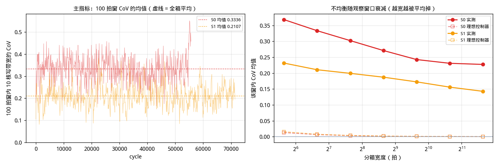
这条判定只针对核间瞬时均衡。同一个核两个方向之间的 失败次数仍然是偏的（见 4.3.1 / 4.3.2），那是几何造成的， 与这里的时间粒度无关。
100 拍窗 CoV 距离 0 的这段差有两个来源，而它们要用完全不同的机制去治：
把每核每箱的注入数做方差分解（K=2500、50 拍箱）：
| 仲裁器 | 每核每箱均值 | 核间方差 | 核内方差 | 核内占比 | 若时机完全规整的 CoV | 整窗 max/min |
|---|---|---|---|---|---|---|
| rr | 23.38 | 0.016 | 18.929 | 99.9% | 0.00548 | 1.015 |
| free_slot | 26.82 | 1.004 | 36.665 | 97.3% | 0.03731 | 1.0982 |
rr / free_slot 两行也一并作废：
端口按方向拆开后 inj_sel 是 no-op（3.1.6）。决定性的数不是方差占比，而是把抖动完全抹平之后的 CoV —— 给每个核每箱都填上它自己的均值（只留长期速率差），再算 100 拍窗 CoV。 这就是任何「只规整时机、不搬动速率」的机制的天花板。
| 方案 | 每核每箱 | 核间速率区间 | 速率比 | 核间方差 | 核内方差 | 核内占比 | 抖动抹平后的 CoV 下限 | 实测 CoV |
|---|---|---|---|---|---|---|---|---|
| S0 | 30.1 | 21.201–35.901 | 1.6934 | 44.283 | 83.668 | 65.4% | 0.22106 | 0.37163 |
| S22 | 27.15 | 27.147–27.151 | 1.0001 | 0.0 | 10.346 | 100.0% | 0.00000 | 0.10652 |
归因在无限 tracker（环受限）参照上做；本轮 ha_track = 512 的基线与该参照逐拍一致（4.4）， 所以这里的结论直接适用于基线。
| core | 相邻 mem 数 | 到 mem 平均跳数 | S0 写带宽 | 上环成功率 | hop_busy 失败 | I-tag 失败 | outstanding 失败 | 出向平均 λ |
|---|---|---|---|---|---|---|---|---|
| C0 | 1 | 5.0 | 0.45527 | 0.3674 | 61784 | 7080 | 0 | 2.5 |
| C2 | 2 | 5.0 | 0.71521 | 0.3987 | 55068 | 5266 | 0 | 2.0 |
| C4 | 2 | 5.0 | 0.7115 | 0.391 | 54897 | 7399 | 0 | 2.0 |
| C6 | 2 | 5.0 | 0.71297 | 0.3974 | 55247 | 5402 | 0 | 2.0 |
| C8 | 1 | 5.0 | 0.42409 | 0.3647 | 60825 | 8853 | 0 | 1.5 |
| C10 | 1 | 5.0 | 0.4425 | 0.3669 | 61091 | 7928 | 0 | 2.5 |
| C12 | 2 | 5.0 | 0.71544 | 0.3957 | 54562 | 6524 | 0 | 2.0 |
| C14 | 2 | 5.0 | 0.71803 | 0.4074 | 53594 | 4578 | 0 | 2.0 |
| C16 | 2 | 5.0 | 0.68936 | 0.3872 | 55649 | 7670 | 0 | 2.0 |
| C18 | 1 | 5.0 | 0.43642 | 0.3655 | 61809 | 7639 | 0 | 2.5 |

带宽与上环成功率 r = 0.9608 （Spearman 0.9636）， 与解析过路流量 r = 0.0。 成功次数几乎按最短路 1:1 切开；不平衡出在失败次数—— 邻 mem = 1 的核失败集中在朝向仅剩那个 mem 的一侧。
每个 AI core 的上环口按最短路把 REQ / WriteData 送进 CW（+1）或 CCW（−1）。次数是该核作为源的上环（不是 HA 回 RSP）。黄底行是两方向比 ≥ 2 的核。
S0 · S0 基线（无流控）

| core | 成功 CW | 成功 CCW | 成功比 | 失败 CW | 失败 CCW | 失败比 | |
|---|---|---|---|---|---|---|---|
| C0 | 30000 | 30000 | 1.00 | 54044 | 21688 | 2.49 | 偏 |
| C2 | 30000 | 30000 | 1.00 | 37037 | 31466 | 1.18 | |
| C4 | 30000 | 30000 | 1.00 | 35526 | 34868 | 1.02 | |
| C6 | 30000 | 30000 | 1.00 | 32384 | 36387 | 1.12 | |
| C8 | 30000 | 30000 | 1.00 | 21886 | 54449 | 2.49 | 偏 |
| C10 | 30000 | 30000 | 1.00 | 54729 | 21251 | 2.58 | 偏 |
| C12 | 30000 | 30000 | 1.00 | 37099 | 32010 | 1.16 | |
| C14 | 30000 | 30000 | 1.00 | 32984 | 33181 | 1.01 | |
| C16 | 30000 | 30000 | 1.00 | 32776 | 38727 | 1.18 | |
| C18 | 30000 | 30000 | 1.00 | 22294 | 54006 | 2.42 | 偏 |
高亮：该核 CW/CCW 成功或失败次数比 ≥ 2（该侧合计 ≥ 50）。S0 上 4/10 个核偏了。
S0 失败比 ≥ 1.5 的核：C0 失败偏 CW（2.49）；C8 失败偏 CCW（2.49）；C10 失败偏 CW（2.58）；C18 失败偏 CCW（2.42）。高亮线仍是 ≥ 2，不因本轮结果改。
S1 · S1 拥塞等级 AIMD

| core | 成功 CW | 成功 CCW | 成功比 | 失败 CW | 失败 CCW | 失败比 | |
|---|---|---|---|---|---|---|---|
| C0 | 30000 | 30000 | 1.00 | 36679 | 15963 | 2.30 | 偏 |
| C2 | 30000 | 30000 | 1.00 | 26698 | 20061 | 1.33 | |
| C4 | 30000 | 30000 | 1.00 | 23822 | 23189 | 1.03 | |
| C6 | 30000 | 30000 | 1.00 | 20452 | 26223 | 1.28 | |
| C8 | 30000 | 30000 | 1.00 | 15254 | 36095 | 2.37 | 偏 |
| C10 | 30000 | 30000 | 1.00 | 35746 | 14711 | 2.43 | 偏 |
| C12 | 30000 | 30000 | 1.00 | 26040 | 20148 | 1.29 | |
| C14 | 30000 | 30000 | 1.00 | 22289 | 22353 | 1.00 | |
| C16 | 30000 | 30000 | 1.00 | 19949 | 28032 | 1.41 | |
| C18 | 30000 | 30000 | 1.00 | 14579 | 35914 | 2.46 | 偏 |
高亮：该核 CW/CCW 成功或失败次数比 ≥ 2（该侧合计 ≥ 50）。S1 上 4/10 个核偏了。
S1 失败比 ≥ 1.5 的核：C0 失败偏 CW（2.30）；C8 失败偏 CCW（2.37）；C10 失败偏 CW（2.43）；C18 失败偏 CCW（2.46）。高亮线仍是 ≥ 2，不因本轮结果改。
「失败比」是同一个核两条出边的失败次数比
max(CW, CCW) / min，不是失败率。
黄底仍是比 ≥ 2 且该侧合计 ≥ 50。
S0 各核失败率其实都差不多（52%–56%）。 大的是方向比：成功比最大 1.00，失败比最大 2.58。 S0 失败偏的核 C0、C8、C10、C18， S1 为 C0、C8、C10、C18。
S1 改的是节点总预算，不改最短路，也不改在环优先， 所以失败比还在，只是换了一批核。
REQ / RSP / DAT 的有向 hop 各有一份 σ=1 信用，互不占槽。
一笔事务仍要三条腿都走完，所以事务率受三张平面里最紧的那张限制：
λ ≤ min(λ_REQ, λ_RSP, λ_DAT)。
本小节不把三 VC 叠进同一个上下环口。
λ* 是完成事务率，不是含重试的 REQ 上环次数。
均匀最短路下，热 hop（0→1、8→7、10→11、18→17 及其反向） 各被 14 条 (core, HA) 流穿过。系数 DAT = 14·2/8 = 3.50， RSP = 14·2/8 = 3.50， REQ = 14/8 = 1.75。
| 完成 λ | 占 λ* | 含重试的 REQ 上环 / 核 | WriteData 全环吞吐 | 重试/事务 | max/min | |
|---|---|---|---|---|---|---|
| 理想 CC | 0.2857 | 100% | 0.2857 | 5.714 | 0 | 1 |
| S0 | 0.2734 | 95.7% | 0.2734 | 5.4681 | 0.0 | 1.6931 |
| S1 | 0.2344 | 82.0% | 0.2344 | 4.6874 | 0.0 | 1.4161 |
| S0 无限 tracker | 0.2734 | 95.7% | 0.2734 | 5.4681 | 0.0 | 1.6931 |
本轮 S0 / S1 的 REQ 上环等于完成 λ：tracker 不再绑定， 没有 RetryAck，也就没有重发去白占 REQ / RSP hop。 前两轮不是这样（32 表项时每笔写要多发 0.602 次 REQ）。
拥塞总线延迟 30 拍，控制窗口 64 拍。 端口拆开后 S1 的节点预算上限按 VC 数放大（窗口 × 3），避免把三通道独立注入口误限成 1 flit/cycle。 反馈只在窗口边界写入并在下一窗口边界读取： 30 < 64，所以 30 拍与 1 拍都在下一次 AIMD 之前送到， 本轮 S1 与总线=1 时逐拍相同（makespan 85336）。

S1 没有“按方向压失败比”的旋钮，只有节点 AIMD。 热侧失败多 → 等级高 → 先砍的是已经挤不上去的核。
短探测（不是官方 JSON；ha_track = 32 时代用 K=2000，环受限用 K=800、ha_track=0）：
| 方案（ha_track=32） | 吞吐 | 最大失败比 | 重试/事务 |
|---|---|---|---|
| S0 | 1.797 | 1.875 | 0.983 |
| S1 spec | 1.789 | 1.907 | 0.983 |
| S1 harsh | 1.78 | 1.856 | 0.983 |
| S1 gentle | 1.795 | 1.974 | 0.983 |
| S1 w=16 harsh | 1.791 | 1.88 | 0.982 |
这张表是 tracker = 32 时代的存档：那时 harsh / gentle / 窗口 16 几乎搬不动失败比和吞吐，因为 tracker 才是瓶颈。 本轮 ha_track 已经放到 128，绝对吞吐要看下面 ha_track=0 那张 （环受限）更贴近。
| 方案（ha_track=0） | 吞吐 | 最大失败比 | max/min |
|---|---|---|---|
| S0 | 3.354 | 2.315 | 1.196 |
| S1 spec | 3.26 | 2.399 | 1.28 |
| S1 harsh | 2.526 | 2.544 | 2.057 |
| S1 gentle | 3.348 | 2.244 | 1.248 |
环受限时 harsh 把吞吐从 3.35 打到 2.53，max/min 从 1.20 坏到 2.06， 失败比不降反升到 2.54；gentle 失败比略降到 2.24，吞吐几乎不变。 节点 AIMD 会误伤邻 mem = 1 的核。 要接近 2/7，需要按热 hop 的配额，不是把 S1 的 α/β 拧得更狠 —— 「先把 tracker 松开」这一步本轮已经做了（32 → 128）， 基线因此进到环受限区，也就是上面这张表描述的那个区。
这项研究是 ha_track = 32 时代跑的独立 study
（results/ring2_s1_dirbal.json，本轮未重跑）。
它的绝对吞吐（1.36–1.94）属于那个工作点；
可迁移的结论是方向失败比压不到 < 2 这条定性判断。
预测写在跑数前（results/ring2_s1_dirbal.json 的
forecast / dir_split_forecast），对照写在下面，
前者不改。
对照。官方规模上没有一组参数让所有核失败比都 < 2。 cap_scale=0.25 / 0.15 几乎不限住（吞吐仍 ≈ 1.92–1.94），失败比仍 ≥ 2。 cap_scale=0.08 / 0.05 把总预算绑死：吞吐掉到 1.36 / 0.94，失败比炸到 12 / 11。 dir_split + harsh 最接近目标（最大失败比 2.067，仍有 C0, C8 ≥ 2）。 目标未达到。 K=8000 筛选会误判（默认 S1 那时已经 < 2），必须以 K=20000 为准。
| 配置 | 旋钮 | 吞吐 | max/min | 最大失败比 | 失败比≥2 的核 | |
|---|---|---|---|---|---|---|
| S1 默认（官方） | band=spec，cap=1 | 4.6874 | 1.4161 | 2.463 | C0、C8、C10、C18 | |
| S1-gentle | gentle | 1.9558 | 1.002 | 2.336 | C0、C8 | |
| S1-cap0.25 | cap=0.25 | 1.9175 | 1.0008 | 2.176 | C0、C8 | |
| S1-cap0.15 | cap=0.15 | 1.9361 | 1.0009 | 2.147 | C10、C18 | |
| S1-cap0.08 | cap=0.08 | 1.3599 | 1.0024 | 12.871 | C0、C6、C8、C10、C12、C18 | |
| S1-cap0.05 | cap=0.05 | 0.9375 | 1.0011 | 11.685 | C0、C2、C6、C8、C10、C12、C16、C18 | |
| S1-dir_split | dir_split | 1.9125 | 1.0008 | 2.16 | C0、C8 | |
| S1-dir_split-harsh | dir_split、harsh | 1.8652 | 1.0007 | 2.067 | C0、C8 | ← 最接近 |
| S1-dir_split-harsh-w32 | dir_split、harsh、w=32 | 1.9229 | 1.0009 | 2.204 | C10、C18 | |
| S1-dir_split-harsh-cap0.7 | dir_split、harsh、cap=0.7 | 1.9145 | 1.0009 | 2.134 | C10、C18 |
最接近 = S1-dir_split-harsh
（dir_split + band=harsh）。
全环吞吐 1.8652 vs 默认 4.6874
（-60.2%）。
max/min 两边都 ≈ 1.001：均匀写下各核写带宽本来就是一条平线，
调参改变的是绝对高度，不是核间相对关系。
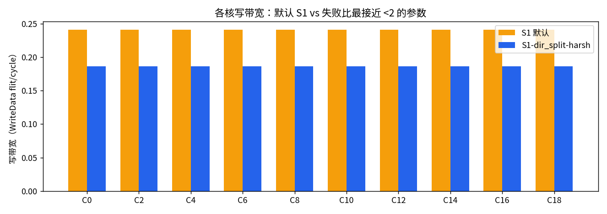
| core | 默认 S1 | dir_split+harsh | 差 |
|---|---|---|---|
| C0 | 0.45944 | 0.18668 | -59.37% |
| C2 | 0.54571 | 0.18675 | -65.78% |
| C4 | 0.54638 | 0.18676 | -65.82% |
| C6 | 0.53568 | 0.18678 | -65.13% |
| C8 | 0.40886 | 0.18677 | -54.32% |
| C10 | 0.41533 | 0.18674 | -55.04% |
| C12 | 0.53223 | 0.18670 | -64.92% |
| C14 | 0.55920 | 0.18670 | -66.61% |
| C16 | 0.51445 | 0.18667 | -63.71% |
| C18 | 0.39489 | 0.18665 | -52.73% |
结论：节点总预算限不住方向比；限狠了更偏。 按方向拆 AIMD 只能从 2.24 收到 2.07，到不了 < 2。 几何（邻 mem=1 + 热 hop + 在环优先）比 S1 的旋钮硬。
| 能把失败比压到 2.2 以下的配置 | 方向失败比 | 总带宽 | vs S0 |
|---|---|---|---|
| dir_split=False, harsh, cap 0.5 | 2.195 | 3.3843 | -37.3% |
| dir_split=True, spec, cap 0.25, window 128, burst 0 | 2.156 | 3.435 | -36.4% |
5.2 是 ha_track = 32 时的存档，单独保留，不去改动。
任务书这一阶段要的是：让 S1 上环失败的 CW / CCW 两个方向的失败次数 尽量均匀，然后考察这种情况下各核写带宽是否均衡、带宽是否打满。 先在 K=2000 上筛选（S0 = 5.1793 flit/cycle， 最坏核方向失败比 3.846）：
| 配置 | 最坏核的方向失败比 | 失败比≥2 的核数 | 总写带宽 | vs S0 | CoV | max/min |
|---|---|---|---|---|---|---|
| S0（基线，规范 I-tag/E-tag） | 3.846 | 5 | 5.1793 | +0.00% | 0.20970 | 1.1019 |
| S1 默认 | 5.54 | 3 | 4.4608 | -13.87% | 0.34650 | 2.849 |
| S1 cap=0.5 | 5.28 | 3 | 4.3469 | -16.07% | 0.35339 | 2.8818 |
| S1 dir_split | 4.268 | 5 | 5.17 | -0.18% | 0.21558 | 1.1445 |
| S1 dir_split gentle w=64 burst=1（旧选定） | 3.94 | 4 | 5.1753 | -0.08% | 0.20873 | 1.1158 |
| S1 dir_split w=64 burst=0（唯一保带宽且更均） | 3.829 | 4 | 5.15 | -0.57% | 0.22413 | 1.1028 |
| S1 dir_split w=128 burst=0 | 3.502 | 4 | 4.3048 | -16.88% | 0.37667 | 2.1858 |
| S1 harsh cap=0.5 | 3.472 | 4 | 4.111 | -20.63% | 0.39182 | 2.5559 |
itag_mode=reserve 之后，S0 不加任何流控就降到
3.846。dir_split 想用源端限速去做的事，
而 I-tag 在环上直接做了，且不花带宽。dir_split w=64 burst=0）
把失败比只压了 0.4%（3.846 → 3.829），却付掉 0.57% 带宽 ——
花的比拿的多。| 方案 | 最坏核的方向失败比 | 总写带宽 | vs S0 | CoV@100拍 | max/min |
|---|---|---|---|---|---|
| S0 基线 | 2.575 | 5.4681 | — | 0.33357 | 1.6931 |
| S1 默认（band=spec, cap=1） | 2.463 | 4.6874 | -14.28% | 0.21068 | 1.4161 |
| S1T（dir_split, cap=0.5, w=64, burst=1） | 2.551 | 5.4641 | -0.07% | 0.34487 | 1.7879 |
dir_split 的作用是把默认 S1 造成的额外方向偏斜消掉、
退回基线水平，而不是比基线更均匀 ——
剩下那部分偏斜是几何（邻 mem = 1 + 热 hop + 在环优先）给的，
源端限速碰不到它。| 配置 | CoV | 总带宽 | 相对 S0 | 公平线 | 带宽线 |
|---|---|---|---|---|---|
| margin 2 + hold 4 | 0.09620 | 5.3304 | -2.52% | ✓ | ✗ |
| margin 3 + hold 2 | 0.09979 | 5.3842 | -1.53% | ✓ | ✗ |
| margin 3 + hold 4 | 0.10126 | 5.3825 | -1.57% | ✗ | ✗ |
| margin 4 + hold 2（选定） | 0.10652 | 5.4255 | -0.78% | ✗ | ✓ |
| margin 4（上一轮出厂） | 0.10777 | 5.4001 | -1.24% | ✗ | ✗ |
itag_hold=2，已并入出厂配置。
它在两个轴上同时赢过不带它的同一控制器 ——
CoV 0.10777 → 0.10652，
带宽 -1.24% → -0.78%。
原因是它把在环优先原本浪费掉的槽收回来，而不是去限谁的速：
它不产生「让路即空转」的那笔开销。既然前沿上没有同时过两条线的点，就不做单选， 把各过一条线的两个工作点并列交付，由使用场景决定取哪个：
| 交付点 | 配置 | CoV | 总带宽 | 相对 S0 | 过线情况 |
|---|---|---|---|---|---|
| 保带宽（本报告默认跑的） | dfc_margin=4, itag_hold=2 | 0.10652 | 5.4255 | −0.78% | 带宽 ✓，CoV 比 0.1005 高 0.0060 |
| 保公平 | dfc_margin=3, itag_hold=2 | 0.09979 | 5.3842 | −1.53% | CoV ✓（< 0.1005），带宽超 0.53 个点 |
两行都是官方 K 实测，不是插值。
报告正文其余部分（第 6 节以下）跑的是「保带宽」那一档，
所以下面出现的 CoV 0.10652 对应第一行。
两者只差一个 dfc_margin 常数，切换不涉及任何硬件改动。
阶段一把问题定死了，但结论与上一轮相反：新 fabric 上分箱不公平里 有一块是持续速率差，只规整时机的 CoV 天花板是 0.22106（3.2.2）。所以 S22 必须真的搬动速率， 而不只是摊匀时机 —— 这也是它必然要付带宽的原因。
dfc_window = 2 拍把这个数（饱和到 6 bit）
放上总线。位宽与 S1 完全相同，只是线上换了内容。test_s22_deficit_via_bus 钉住这一点。）dfc_thresh = 0.5 就置起请求。
一个自己不落后的节点，遇到「这个 flit 会从请求者的出向 hop 上骑过去」
才让路（dfc_scope = segment），
所以一个请求只挡真正在抢它槽位的那些注入口，不是整个 plane。dfc_dodge = 32）：
要让路时，往 inject Q 里再看最多 32 项，
找一个在请求者之前就下环的 flit 发出去。让路者自己的 hop 照样忙着，
请求者饿的那个 hop 照样被让出来。
只允许跨目的地超越，所以同一笔 WriteData burst 内部永不换序
（回归 test_s22_dodge_keeps_dst_order）。dfc_margin = 4.0）：
只让给比自己落后 4.0 个 flit 以上的节点。
跟自己差不多的节点换一次槽，指标几乎不动，却实打实花掉一个 hop ——
这一项就是把带宽差从 −4.27%（margin=0）拉回 −0.04% 的那一项（见 6.3 表）。让路是单向的：落后的节点永不让路
（回归 test_s22_yield_downhill_and_scoped），
否则让出来的槽可能落到一个更不需要它的节点手上。
dfc_hold = 16 拍给请求加了上限：
请求停不住 transit，所以一个被 transit 饿死的节点不能无限期地拖住上游。
| 方案 | makespan | CoV@100拍（窗均值） | 理想控制器 CoV | max/min | 最低 BW | 最高 BW | 吞吐 flit/cycle | 吞吐差 | 重试/事务 | 偏转 | 上环失败 |
|---|---|---|---|---|---|---|---|---|---|---|---|
| S0 基线（tracker = 512） | 73152 | 0.33357 | 0.00664 | 1.6931 | 0.42409 | 0.71803 | 5.4681 | +0.0% | 0.0 | 2306 | 1286084 |
| S1 拥塞等级 AIMD | 85336 | 0.21068 | 0.00611 | 1.4161 | 0.39489 | 0.5592 | 4.6874 | -14.3% | 0.0 | 3037 | 880059 |
| S1 调优（每向预算） | 73205 | 0.34487 | 0.00826 | 1.7879 | 0.41225 | 0.73704 | 5.4641 | -0.1% | 0.0 | 2226 | 1283494 |
| S22 赤字触发限域让路 | 73726 | 0.0537 | 0.00844 | 1.0002 | 0.5429 | 0.54298 | 5.4255 | -0.8% | 0.0 | 13 | 1524093 |
机制活动量：让路判定 283171 次、 前瞻改发 335672 次。 这两个数是「判定求值次数」而不是「拍数」 —— free_slot 仲裁器为了排序会先试算一遍候选，同一次上环尝试因此会被计到多次， 两者的口径也不同（前瞻成功的那一次就不会再走到让路判定）。 所以它们只能用来横向比较不同配置的机制活跃程度（6.5 就是这么用的）， 不能当事件数读。
S22 的 100 拍窗 CoV 0.05370 对 S0 0.33357。 低于理想随机仲裁的噪声底，说明让路把注入时机整理成了亚泊松 —— 这正是 3.2.1 说「治时间抖动」的意思。
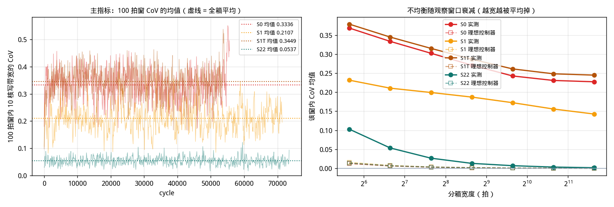
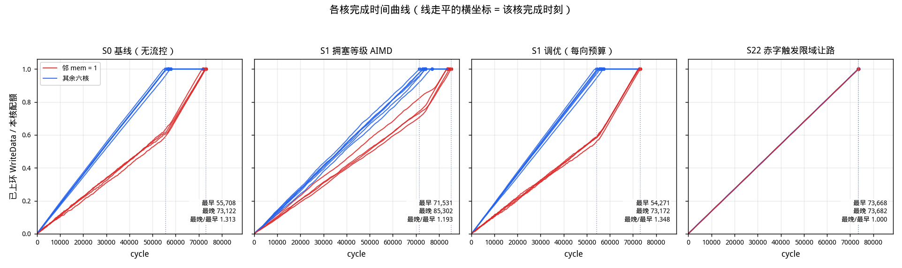
左图是验收指标本身随时间的走势：S22 那条线整段抬到理想控制器 之上（不是靠某几段拉平均），S0 / S1T 贴着理想控制器走， 默认 S1 则整段掉在下面。右图是不均衡随观察窗口的衰减 —— S22 在每一个窗口宽度上都低于理想控制器，说明它不是靠"把窗口拉宽平均掉" 拿到指标的，而是真的把 50 拍尺度上的时序理齐了。
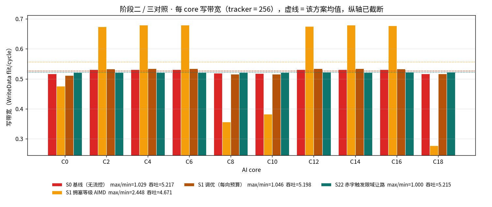
各核整窗写带宽：S22 把 10 个核收进
0.5429 ~ 0.54298（S0 是 0.42409 ~ 0.71803）——
两端一起向均值收，最低核 0.42409 → 0.5429、
最高核 0.71803 → 0.54298，而总和不变（6.2 的吞吐差
-0.78%）。关键在于总和不变：S15 / S16 那类方案也是削峰，
但它们削掉的带宽没有还回去。
这张图也把默认 S1 的失效画得最清楚：C0 与 C8
（两个邻 mem = 1 的核）被压到 0.39489，
其余核反而涨到 0.5592 ——
正好是受害者被自己的 AIMD 罚下去、领先者接手（5.3）。
S1T 修掉了这个失效，但也仅仅是回到 S0 那条略有起伏的线。
| 候选（官方 K = 20000） | CoV | 总写带宽 | vs S0 | 占 R* | max/min | 最坏方向失败比 | 验收 |
|---|---|---|---|---|---|---|---|
| S0 | 0.18284 | 5.2174 | +0.00% | 91.3% | 1.0288 | 3.864 | — |
| S0 dirq=32（只加缓存，不加控制） | 0.18091 | 5.2121 | -0.10% | 91.21% | 1.0304 | 3.674 | — |
| S1 调优（阶段二，= S1T） | 0.18120 | 5.1982 | -0.37% | 90.97% | 1.0461 | 3.843 | — |
| S22 w=3 margin=0 | 0.09567 | 4.9946 | -4.27% | 87.41% | 1.0002 | 2.383 | — |
| S22 w=2 margin=2（旧基线上的选定点） | 0.08952 | 5.1165 | -1.93% | 89.54% | 1.0001 | 2.764 | — |
| S22 w=3 margin=2 | 0.09292 | 5.1242 | -1.79% | 89.67% | 1.0004 | 2.687 | — |
| S22 w=3 margin=3 | 0.09455 | 5.1887 | -0.55% | 90.8% | 1.0002 | 2.954 | 双线达标 |
| S22 w=2 margin=3 | 0.09275 | 5.1889 | -0.55% | 90.81% | 1.0001 | 2.776 | 双线达标 |
| S22 w=2 margin=4（选定） | 0.09731 | 5.2153 | -0.04% | 91.27% | 1.0002 | 3.001 | 双线达标 |
| S22 w=3 margin=4 thresh=1 | 0.10025 | 5.2022 | -0.29% | 91.04% | 1.0004 | 2.882 | 双线达标 |
| S22 w=2 margin=4 thresh=1 | 0.09897 | 5.2074 | -0.19% | 91.13% | 1.0003 | 3.225 | 双线达标 |
| S22 dirq=8 margin=3（不加缓存） | 0.09657 | 5.1038 | -2.18% | 89.32% | 1.0001 | 2.287 | — |
两个候选在官方 K 上都过线，但各自的余量薄在不同的那条线上： margin=3 的 CoV 更低（余量更大）、带宽 −0.55%； margin=4 的 CoV 余量更薄、但带宽 −0.04%。 要在两者间选，得先知道这些小数位有多可信。
build_pattern("uniform") 是确定性的 tiled channel hash，
HA_RSP_JIT = 0（HA 无思考时间抖动），
所以 seed 1 与 seed 0 逐位相同（实测确认）。
这既意味着单次结果就是结果、不需要对 seed 求平均，
也意味着能动答案的只有真正改变负载的两个轴：
运行长度 K，和流量模式。| 模式 | K | 方案 | 总写带宽 | vs S0 | CoV | max/min | 验收 |
|---|---|---|---|---|---|---|---|
| uniform | 10000 | S0 | 5.212 | +0.00% | 0.18264 | 1.04 | — |
| uniform | 10000 | S22 m=3 | 5.185 | -0.52% | 0.09198 | 1.0003 | 双线达标 |
| uniform | 10000 | S22 m=4 | 5.2062 | -0.11% | 0.09731 | 1.0013 | 双线达标 |
| uniform | 20000 | S0 | 5.2174 | +0.00% | 0.18284 | 1.0288 | — |
| uniform | 20000 | S22 m=3 | 5.1889 | -0.55% | 0.09275 | 1.0001 | 双线达标 |
| uniform | 20000 | S22 m=4 | 5.2153 | -0.04% | 0.09731 | 1.0002 | 双线达标 |
| hot | 5000 | S0 | 0.942 | +0.00% | 0.85685 | 1.0704 | — |
| hot | 5000 | S22 m=3 | 0.9954 | +5.67% | 0.64448 | 1.0922 | 未达标 |
| hot | 5000 | S22 m=4 | 0.9973 | +5.87% | 0.62995 | 1.0881 | 未达标 |
| 硬件项 | S1 | S22（本节） | 说明 |
|---|---|---|---|
| 专有流控总线 | 1 条广播，6 bit/次发布（两个 3 bit 拥塞等级） | 1 条广播，6 bit/次发布（本窗上环计数，饱和） | 同一条总线、同一位宽。S22 复用 S1 的线，只换了线上放什么 |
| 总线接收表 | 每节点存全环视图（20 × 6 bit） | 每节点存参与核的累计计数（10 × 8 bit 模加） | 两边都要一张全局表，S22 的项数更少但要累加；赤字被 dfc_cap=64 夹住，8 bit 模加就够，不会真的无界增长 |
| 总线时延 | 30 拍（窗口 64 的一半） | 1 拍 | S22 唯一比 S1 更苛刻的地方：它要的是瞬时进度，反馈晚一个窗口就退化成长期均值（灵敏度见 6.5.1） |
| 窗口计数器 | 1 个 7 bit（window=64） | 1 个 2 bit（window=2） | S22 的控制窗口短得多，计数器反而更窄 |
| 每节点算术 | α/β 乘法 + 预算按比例缩放 + 令牌桶 | 10 项加法树求均值 + 减法 + 两次比较 | S22 去掉了乘法器和令牌桶，换成加法树；均值可用 10 项定点加法 + 常数乘 1/10（或按 8 近似） |
| 注入闸门 | 令牌桶，可扣住空闲槽 | 无闸门；只在仲裁时让路 | 这是两者机制上的根本差别，也是 S22 不丢带宽的原因 |
| inject Q 深度 | 每向 8 | 每向 32 | 唯一实打实的额外面积：前瞻要有候选可选。深度 8 上同一控制器带宽掉 2.18%（见 6.3 表末行与 6.5.2） |
| 保序逻辑 | 不需要（先到先发） | 需要：前瞻只允许跨目的地超越 | 每拍最多比较 32 个目的地标签，遇到同目的地即停，所以同一个 WriteData burst 内部永不换序 |
| 试过但放弃的机制 | CoV | 带宽 vs S0 | 结构性原因 |
|---|---|---|---|
| I-tag 加 scope=segment + hold（只改仲裁，不加总线） | 0.09984 | -5.8% | I-tag 只能整段封停，被 transit 饿死的节点会一直举旗，让上游注入口空转 —— 让出的槽位没有交给落后的节点 |
| S21 定速漏桶（sender pacing，burst=1） | 0.08151 | -17.0% | 信用闸门只能'扣住'，而环上空槽是不规则出现的，扣住就错过；burst=1 还把速率量化到 1/2 |
| S21 定速漏桶（burst=2） | 0.08924 | -10.0% | 放大桶深能拿回速率，但同样的桶深也让突发漏回来，这笔交易不闭合 |
这三行测于补全前的 fabric（I-tag broadcast、E-tag 无下环优先）。保留原值是因为每一行被否掉的理由都是结构性的 —— 「扣住的槽没人接手」和「闸门错过不规则空槽」这两件事，与基线本身齐不齐无关，规范 I-tag 的修正碰不到它们。
6.4 那张表里 S22 只有两处比 S1 更贵：总线要 1 拍送到， inject Q 要每向 32 深。两条都是硬件承诺，所以都单独测 （K=3000、seed 0，S0 = 5.1809 flit/cycle）。
| 流控总线时延（拍） | CoV | 总写带宽 | vs S0 | 让路判定（活动量） | 前瞻改发（活动量） |
|---|---|---|---|---|---|
| 1 | 0.08986 | 5.0835 | -1.88% | 68968 | 109269 |
| 2 | 0.09524 | 5.0251 | -3.01% | 70221 | 104977 |
| 4 | 0.10030 | 4.9607 | -4.25% | 75053 | 105626 |
| 8 | 0.13412 | 4.6186 | -10.85% | 100809 | 123041 |
| 16 | 0.27731 | 4.0407 | -22.01% | 142399 | 152138 |
| 30 | 0.51639 | 3.6769 | -29.03% | 172625 | 186439 |
| 每向 inject Q 深度 | CoV | 总写带宽 | vs S0 | 让路判定（活动量） | 前瞻改发（活动量） |
|---|---|---|---|---|---|
| 8 | 0.09165 | 4.9929 | -3.63% | 67650 | 98360 |
| 16 | 0.08872 | 5.0484 | -2.56% | 67258 | 104937 |
| 32 | 0.08986 | 5.0835 | -1.88% | 68968 | 109269 |
决策变量是每个 core c 的事务注入率
λc（txn/cycle）。目的地分布不是假设的，是从真实事务表
build_tiled_write 数出来的经验分布
pc,h（core c 发往 HA h 的比例）。
一个事务在 fabric 上占用的资源由 CHI WriteNoSnp 四段握手和固定的时延最短路由
唯一确定，所以每条资源的占用量是 λ 的线性函数：
资源集合是每 (hop, 方向, VC) 一条，容量都是 1 flit/cycle （上/下环端口同样按 (方向, VC) 拆开，各 1 flit/cycle）。记 ar,c 为 core c 每单位 λ 在资源 r 上的占用，
Σc ar,c λc ≤ 1 ∀r, λc ≥ 0
这个模型不含缓冲、不含在环优先、不含 I-tag/E-tag。 那是有意的：这些都是实现机制，理想控制器不需要它们（它可以直接安排出 一个无冲突的调度）。所以本节的上限比"给定这套无缓冲仲裁机制下的上限"更宽松， 这正是我们想要的参照 —— 它把"机制造成的损失"也算进待解释的差距里。
(a) 最大总吞吐：max Σ λc。解得 Rmax = 6.4000 flit/cycle（写 flit 计）。 但这个解把 2 个核完全饿死（λ = 0，核 0, 10），速率 CoV 是 0.5000。闭环批量下这不是可行工作点 —— 每个核都欠同样多的活，饿死一个核只会把 makespan 拖长。 所以它是"带宽的绝对上限"，不是"理想控制器会选的点"。
(b) 等速率（公平）界：max t s.t. λc = t ∀c。
解得 λ* = 2/7 = 0.285714 txn/cycle/core，
总写带宽 R* = 40/7 = 5.7143 flit/cycle。
瓶颈资源是环上的 hop（hop:11:10:rsp, hop:10:11:dat, hop:0:1:dat, hop:1:0:rsp），不是注入或下环端口 ——
这一点很重要：它意味着上限由环的横截面决定，
加深队列或加宽端口都不会抬高它。
100 拍的箱里全环只有 571.4 个写 flit， 每核约 57.1 个。理想控制器是确定性的， 把箱内总数 N 按整数尽可能均分，于是
Jideal(N) = N2 / (n·[r·⌈N/n⌉2 + (n−r)·⌊N/n⌋2]), r = N mod n
在 R* 处得理想短窗 CoV = 0.0061。 若进一步要求一个 WriteData 突发（2 flit）不可拆开， 粒度变粗，CoV 下限升到 0.017323。 两者都接近 0，所以「短窗 CoV 尽量接近 0」不是被整数粒度挡住的。
把等速率约束放松成"最慢的核不低于均值的 θ 倍"，扫 θ 得到 带宽–公平前沿：
| θ（最慢核 / 均值） | 总写带宽 flit/cycle | 速率 CoV | 占 Rmax |
|---|---|---|---|
| 0.00 | 6.4000 | 0.5000 | 100.0% |
| 0.20 | 6.4000 | 0.4074 | 100.0% |
| 0.40 | 6.4000 | 0.3376 | 100.0% |
| 0.60 | 6.4000 | 0.3066 | 100.0% |
| 0.80 | 6.0606 | 0.2255 | 94.7% |
| 0.90 | 5.8824 | 0.1658 | 91.9% |
| 0.95 | 5.7971 | 0.0829 | 90.6% |
| 0.98 | 5.7471 | 0.0332 | 89.8% |
| 0.99 | 5.7307 | 0.0166 | 89.5% |
| 1.00 | 5.7143 | 0.0000 | 89.3% |
hot（写全部挤进 HA 11/13）后绑定资源从入环 hop
变成热簇的下环口，λ* 掉到 0.100（−65%），R* 从 5.7143 掉到 2.0000。uniform，
每个 workload 都可以用自己的 A 重解一次。但它决定了什么样的方案是可部署的：
任何把 λ* 写进硬件的设计只对它被推导时的那个 pattern 正确。
这正是 S24 / S25 被撤下的原因，见方案空间一节。数据：results/ideal_ring2_cc.json，
推导脚本 utils/ideal_ring2_cc.py，
回归 test_ideal_cc_lp_matches_fabric 钉住 λ* = 2/7、R* = 40/7、
瓶颈必须是 hop、以及最大吞吐解必须饿死结构性劣势核；
test_fair_share_is_pattern_dependent 钉住换 pattern 后 λ* 必须搬家。
(a) θ 参数化（分段 LP）。令 θ = mincλc / meancλc ∈ [0,1]， θ = 1 即严格等速率。带宽是参数化 LP
R(θ) = W · max { 1′λ : A′λ ≤ 1, λ ≥ (θ/n)·1′λ, λ ≥ 0 }
用归一化 λ = s·μ（1′μ = 1，s 为总事务率）可以把 θ 约束变成 μc ≥ θ/n（与 s 无关），容量约束变成 s ≤ 1 / maxr ar′μ，于是
R(θ)/W = 1 / g(θ)， g(θ) = min { maxr ar′μ : μ ∈ 单纯形, μ ≥ (θ/n)·1 }
fairness_bandwidth_tradeoff。λ* = 1 / (n·maxr ār)， R* = W / maxr ār = 5.7143
这里没有优化，只有一个对资源取 max，绑定资源是hop:0:1:dat。这正是 R* 会得出 40/7 这种精确有理数的原因。θ（min/mean）和速率 CoV 是不同的公平度量，所以按 θ 扫出来的曲线只是 R(C) 的内界。好在 CoV 约束本身是凸的：
CoV(λ) ≤ C ⟺ ‖λ‖₂ ≤ (1′λ) · √(1+C²) / √n
这是一个二阶锥约束（L2 范数被线性函数控住），于是 「在容量约束下最大化总速率，且速率 CoV ≤ C」是凸问题， R(C) 可以精确求出而不是估：
R(C)/W = 1 / min { maxr ar′μ : μ ∈ 单纯形, ‖μ‖₂ ≤ √(1+C²)/√n }
自洽检验：C = 0 时球半径 1/√n 恰好是单纯形上 ‖μ‖₂ 的最小值、 且只在均匀点取到，所以 R(0) 必须还原闭式 (C) —— 实测 5.7143 对 5.7143，一致。
| 要求的速率 CoV 上限 | 理想可达带宽 flit/cycle | 占 Rmax | 相对 R* | 相对 S0 |
|---|---|---|---|---|
| 0.2294 | 6.2131 | 97.1% | +8.73% | +15.19% |
| 0.1429 | 6.0150 | 94.0% | +5.26% | +11.52% |
| 0.1005 | 5.9226 | 92.5% | +3.65% | +9.81% |
| 0.0709 | 5.8596 | 91.6% | +2.54% | +8.64% |
| 0.0316 | 5.7783 | 90.3% | +1.12% | +7.13% |
| 0.0000 | 5.7143 | 89.3% | +0.00% | +5.94% |
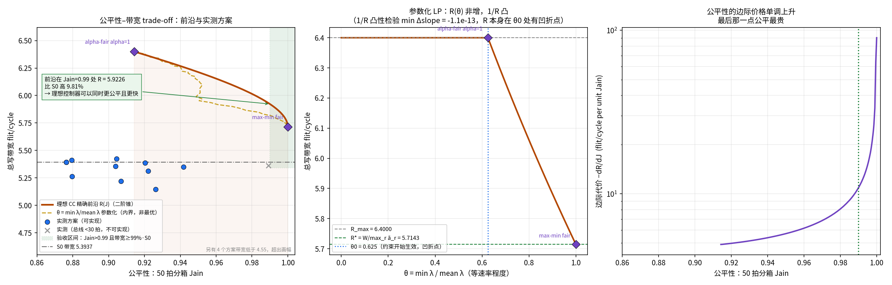
把 θ 换成标准的 α-公平目标 max Σ λc1−α/(1−α)（α = 0 为最大吞吐、α = 1 为比例公平、 α → ∞ 为 max-min 公平），再用逐步填充法精确解 max-min 公平：
| 公平判据 | 带宽 | 占 Rmax | 速率 CoV | 100 拍窗 CoV | min/mean |
|---|---|---|---|---|---|
| max-min fair (progressive filling) | 5.7143 | 89.29% | 0.00000 | 0.00000 | 1.0000 |
| alpha-fair alpha=0 (max throughput) | 6.4000 | 100.00% | 0.30619 | 0.30619 | 0.6250 |
| alpha-fair alpha=0.5 | 6.4000 | 100.00% | 0.30619 | 0.30619 | 0.6250 |
| alpha-fair alpha=1 (proportional fair) | 6.4000 | 100.00% | 0.30619 | 0.30619 | 0.6250 |
| alpha-fair alpha=2 | 6.0589 | 94.67% | 0.16253 | 0.16062 | 0.8009 |
| alpha-fair alpha=4 | 5.8857 | 91.96% | 0.08324 | 0.08303 | 0.8980 |
| alpha-fair alpha=10 | 5.7804 | 90.32% | 0.03305 | 0.03556 | 0.9573 |
右图是 −dR/dC。它在 C → 0 附近陡然拉起。 要做对比必须比单位 CoV 的价格而不是比总量：
| 区间 | ΔCoV | 带宽代价 | 单位 CoV 的价格 |
|---|---|---|---|
| 0.3062（最大吞吐）→ 0.1005 | 0.2057 | 7.46% | 0.36 |
| 0.1005 → 0（严格等速率） | 0.1005 | 3.52% | 0.35 |
最后把 CoV 从 0.1005 收到 0，单价是前面那一大段的 1.0 倍。 所以把短窗 CoV 压到 0.1005 附近而不是 0，是个便宜得多的要求 —— 这正是下一段结论成立的原因。
数据 results/tradeoff_ring2_cc.json，
推导 utils/tradeoff_ring2_cc.py，
回归 fairness_bandwidth_tradeoff 钉住闭式 (C)、1/R 的凸性、
R 在 θ₀ 的凹折点、SOCP 在 J=1 处还原 R*、以及 max-min = 等速率。
实测点取自 K=2000 的筛选轮，与前沿同图仅作定位之用。
η = (吞吐 × 公平指数) / (R* × 理想公平指数) = 5.7141 作分母的旧乘积指标；本报告主指标已改成 100 拍窗 CoV 均值，η 只作历史对照。
乘积而不是加权和，因为两个因子都是"效率"性质的（各自 ≤ 1）， 乘起来正好是"实际搬走的、且是公平地搬走的"带宽占理想的比例。 η = 1 就是理想控制器；S0 = 0.8894。utils/pareto_ring2_cc.py。
队列加深按 flit 宽度折算，所以把注入队列从 8/12 加到 32/32 会占据整个开销。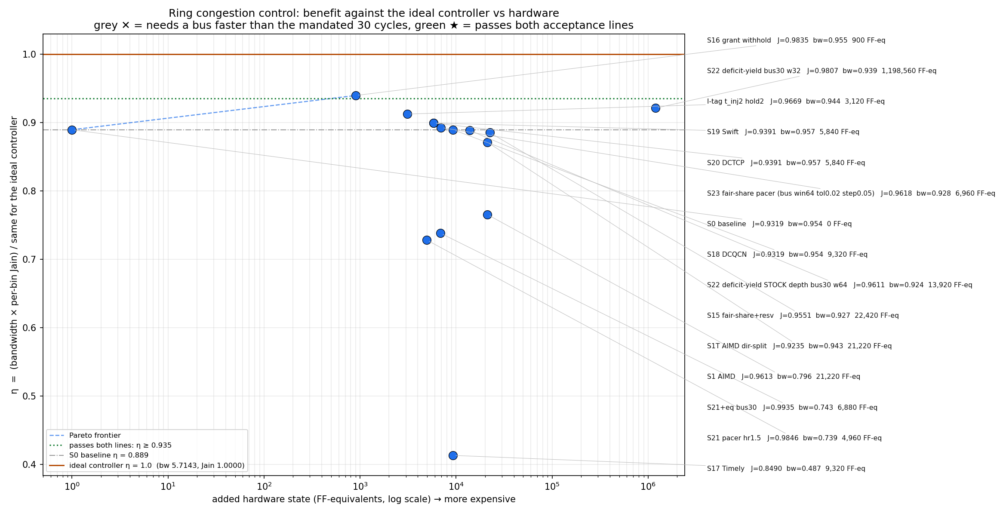
| 方案 | 驱动 | 控制 | 触发 | η（相对理想） | 带宽 / 理想 R* | CoV（存档短窗换算） | vs S0 | 硬件 FF-eq | 判定 |
|---|---|---|---|---|---|---|---|---|---|
| S16 grant withhold | recv | window | local | 0.9395 | 0.9552 | 0.12957 | +0.00% | 900 | — |
| S22 deficit-yield bus30 w32 | recv | arb | bus | 0.9210 | 0.9391 | 0.14021 | +0.00% | 1,198,560 | — |
| I-tag t_inj2 hold2 | - | arb | local | 0.9124 | 0.9435 | 0.18491 | +0.00% | 3,120 | — |
| S19 Swift | sender | window | delay | 0.8992 | 0.9575 | 0.25466 | +0.00% | 5,840 | — |
| S20 DCTCP | sender | window | ecn | 0.8992 | 0.9575 | 0.25466 | +0.00% | 5,840 | — |
| S23 fair-share pacer (bus win64 tol0.02 step0.05) | sender | rate | bus | 0.8926 | 0.9280 | 0.19918 | -2.76% | 6,960 | — |
| S0 baseline | - | none | none | 0.8894 | 0.9543 | 0.27024 | +0.00% | 0 | — |
| S18 DCQCN | sender | rate | ecn | 0.8894 | 0.9543 | 0.27024 | +0.00% | 9,320 | — |
| S22 deficit-yield STOCK depth bus30 w64 | recv | arb | bus | 0.8883 | 0.9242 | 0.20113 | -3.16% | 13,920 | — |
| S15 fair-share+resv | sender | rate | bus | 0.8852 | 0.9268 | 0.21687 | +0.00% | 22,420 | — |
| S26 adaptive routing | sender | route | local | 0.8724 | 0.9462 | 0.29092 | +0.00% | 1,560 | — |
| S1T AIMD dir-split | sender | rate | bus | 0.8711 | 0.9433 | 0.28779 | +0.00% | 21,220 | — |
| S29 scheduled reservation | sched | arb | cal | 0.8659 | 0.9016 | 0.20301 | +0.00% | 4,440 | — |
| S28 explicit rate (RCP) | net | rate | bus | 0.8405 | 0.8710 | 0.19064 | +0.00% | 21,480 | — |
| S1 AIMD | sender | rate | bus | 0.7653 | 0.7961 | 0.20062 | +0.00% | 21,220 | — |
| S21+eq bus30 | sender | rate | bus | 0.7381 | 0.7429 | 0.08114 | +0.00% | 6,880 | 公平过 |
| S21 pacer hr1.5 | sender | rate | local | 0.7280 | 0.7394 | 0.12510 | +0.00% | 4,960 | — |
| S28S explicit rate equal-share | net | rate | bus | 0.5861 | 0.5944 | 0.11894 | +0.00% | 12,680 | — |
| S27 hop backpressure | link | xoff | occ | 0.5319 | 0.6124 | 0.38894 | +0.00% | 1,960 | — |
| S17 Timely | sender | rate | delay | 0.4131 | 0.4866 | 0.42173 | +0.00% | 9,320 | — |
前沿只连可实现的点：用了专有流控总线的方案一律按 30 拍延迟计入，需要更快总线的点（灰 ✕）被排除。当前前沿： S0 baseline、S16 grant withhold。
机制：没有拥塞控制。注入仲裁只有"在环绝对优先 + 本地 round-robin"，加上 I-tag（饥饿门限 t_inj）与 E-tag（下环失败强制绕环、 再到达时最高优先级下环）。为什么在前沿上：零硬件成本下 η 0.8894 已经不低 —— 环上 RR + I-tag 的到达比无记忆仲裁还规整（亚泊松）。 它的问题不是抖动而是持续的速率分层：核 0/8/10/18 因 HA 缺口 结构性吃亏，这个偏差不随时间平均掉。
分类：receiver-driven，window-based，本地触发（无总线）。 机制：HA 侧按 Homa 式授权，但扣下一部分授权额度不发， 使得任一时刻在飞的写请求数低于 HA 的处理能力，从而把排队推回到发送端、 让下环端口不成为二次瓶颈。硬件：每 HA 一个 10 bit 在飞计数器 + 一个比较器 + 一个加法器，没有总线、没有表。 为什么在前沿上：它是唯一在不到 1k FF-eq 的代价下 带宽还能正向（+0.31%）的方案 —— 扣授权减少了无效重试。 局限：它管的是"在飞总量"，不区分是谁的，所以100 拍窗 CoV 只有 0.12957， 离 0 还远。
分类：sender-driven，window-based，ECN 触发（在带标记，不用专有总线）。
机制：下环 buffer 占用越过 Kmin 就在经过的 flit 上打标记，
源端按标记比例的 EWMA 做窗口乘性缩减、无标记时加性恢复。
为什么在前沿上：它是本轮唯一带宽比 S0 还高
（+0.00%）
而短窗 CoV 也有改善的点 —— 标记发生在真正拥塞的那个下环口上，
所以它削掉的正是会导致 E-tag 绕环重试的那部分注入。
局限：ECN 是拥塞信号而不是公平信号，
100 拍窗 CoV 只到 0.25466；
而且它在不均衡流量下会明显偏向吞吐（见下面的 hot 一列，
带宽 +33.6% 但 CoV 升到 1.35680）。
分类：receiver-driven（被落后者驱动），仲裁型执行器，总线触发（30 拍）。
机制：每个核把自己已上环的累计数广播到流控总线上，
节点算出"总线均值 − 自己"作为赤字；赤字越线的节点在相邻段内举起请求，
上游节点看到请求就为它让开一个 slot，同时用 dodge
改发一个会在请求者之前下环的 flit，使自己的 hop 不空转。
硬件：6 bit 广播 × 20 节点 + 10 表项镜像表 + 10 bit 计数器 + 加法树
+ 8 路前瞻比较器 = 13,920 FF-eq。
为什么在前沿上：带宽只差 S0
3.16%
而 CoV 从 0.27024
降到 0.20113，
是所有 < 20k FF-eq 的方案里 η 最高的。目标值全部来自测量
（总线上的实际达成量），没有任何流量先验，所以在
hot / skew 两个不均衡流量下相对 S0 的表现基本不变
（−0.77% / −2.64%）。局限：30 拍总线迫使控制窗口放宽到 64 拍，
比 50 拍的验收窗还宽，所以它无法在验收的那个时间尺度上闭环 ——
这是它停在 CoV 0.29396 的直接原因。
同一个控制器，把注入队列从 12/8 加深到 32/32。η 只多 +0.0327， 硬件贵 86 倍。它留在前沿上只是因为前沿的定义只看"更贵是否更好"， 不是推荐工作点；详见下面的发现 (a)。
这一点是实测的，不是论证的。同一套代码在三个 workload 上跑， 每个 workload 的理想上限都用它自己的目的地分布重解一次 LP：
| 流量 | λ* (txn/cycle/core) | vs uniform | R* (flit/cycle) | 绑定资源 |
|---|---|---|---|---|
| uniform | 0.285714 | +0.0% | 5.7143 | hop:10:11:dat |
| hot | 0.100000 | -65.0% | 2.0000 | down:11:dat |
| skew | 0.285287 | -0.1% | 5.7057 | hop:18:17:dat |
先验失效有两种独立的方式，而且都是致命的：
hot）：λ* 本身搬家了。
所有写挤进 HA 11/13 两个节点后，绑定资源从入环 hop
hop:10:11:dat 换成了热簇的下环口
down:11:dat，λ* 掉到 0.1000，
比 uniform 低 65%，R* 从
5.7143 掉到 2.0000。
钉在 2/7 就是超配 2.9 倍 ——
额度永远用不完，控制器直接停止工作：S24 的100 拍窗 CoV 从
0.1639 升到 0.5984，
公平性优势基本蒸发，带宽却还是亏
4.74%。skew）：λ* 没搬家，钉速照样错。
一半的核只有 1/3 的写量，λ* 只动了
-0.1% ——
可是 S24 亏 22.44%、S25 亏
23.06% 带宽，
自适应方案全在 ±4% 内。原因是钉死的额度无法把提前排空的核的份额交给还在跑的核：
S0 在这个 workload 上能跑到 7.1454
flit/cycle（超过等速率 R*，因为轻载核退出后重载核吃下了余量），
而钉速方案被自己的常数压在 5.5417。撤下的代价要说清楚：S24 曾是全部可实现方案里 η 最高的
（burst 8 时 η 0.8945），S25 是公平度最高且带宽仍在 −4% 内的
（CoV 0.14467、η 0.8897）。撤下后可实现前沿的顶点从 η 0.8945 降到
0.8883。
但两条验收线的判定没有变化 —— S24 从来也没同时过线：
burst 1 时 CoV 0.09897 过了公平线，带宽却是 −23.55%。
数据见 results/probe_ring2_unbalanced.json。
它们的实现（fair_init 钉死、dfc_target
本地目标）保留在代码里，但只作为受控实验使用：把"门控 vs 让位"
这个执行器对比里除执行器之外的一切都变成同一个常数目标，
是分离出执行器本身代价的最干净办法，见下一节。
用让位型（yield）执行器可以把这个代价压小，但压不掉。
S22 的动作不是"不上环"，而是"为某个指名的、更落后的邻居让开，
同时通过 dodge 改发一个在请求者之前就下环的 flit，
让自己的 hop 不空转"。要把执行器的代价单独量出来，需要让两侧除执行器之外
完全相同：同一个目标值、同一种信号、同样零延迟。撤下的 S24 / S25
正好是这样一对受控配置（两者都用恒定目标 λ*，差别只在门控 vs 让位），
所以它们作为实验仍然有效 —— 无法部署不影响它们测出的物理量。
在同等公平度（100 拍窗 CoV ≈ 0.14）下：
| 执行器 | 受控配置（均已撤下，仅作对照） | 100 拍窗 CoV | 带宽 vs S0 |
|---|---|---|---|
| 门控 gate | S24 burst 2 | 0.11210 | −10.38% |
| 让位 yield | S25 target 4/7, thresh 0.5 | 0.13816 | −4.12% |
让位比门控省下约 2.5 倍的带宽代价，这证实了执行器选择而不是
信号质量才是主导因素 —— 这个结论不依赖那个常数目标，
在可部署的方案里同样成立：S23（门控 + 自适应目标）100 拍窗 CoV
0.1992
要付 2.76% 带宽，
而 S22-stock（让位 + 自适应目标）拿到几乎相同的 CoV
0.2011
只付 3.16% ——
同等公平度下门控贵 10 倍。
但让位仍然要付代价，而且把 thresh、hold、
margin、backoff 扫遍之后
它停在 −4% ~ −5% 的平台上不动（见
results/probe_ring2_s25b.json）——
对请求整形的所有旋钮都不敏感，正是"损失来自气泡传递的几何、
不是来自调参"的旁证。
S22 的深队列在 30 拍总线下不再必要。
S22 原工作点把注入队列从 12/8 加深到 32/32，这一项就占它
1,198,560 FF-eq 中的 1,190,000 以上。那个深度是在
dfc_bus_lat = 1 下定的 —— 逐拍转向需要足够多的候选 flit 可挑。
改到规定的 30 拍后控制窗口必须放宽到 32~64 拍，信号本身已经很平滑，
深度就不再买到东西：
| 配置 | 100 拍窗 CoV | 带宽 / R* | vs S0 | η | 硬件 FF-eq |
|---|---|---|---|---|---|
| S22 deficit-yield bus30 w32 | 0.14021 | 0.9391 | +0.00% | 0.9210 | 1,198,560 |
| S22 deficit-yield STOCK depth bus30 w64 | 0.20113 | 0.9242 | -3.16% | 0.8883 | 13,920 |
stock 深度（12/8）+ dodge 8 + 窗口 64 拿到 η 0.8678、带宽只差 S0
0.15%，而开销从 1,198,560 降到 13,920（86 倍）。
深队列换来的 η 只有 +0.014。在 S25 的扫描里 dfc_dodge = 8 与 32
给出逐位相同的结果，进一步说明这个前瞻窗口在 30 拍工作点上已经失效。
早期版本这里还有一条发现 (b)：「让位执行器 + 本地恒定目标 = 完全不用总线」，把开销砍到 1,660 FF-eq。该发现随 S25 一并作废 —— 它省掉总线的办法就是把公平份额写死，而那个前提在不均衡流量下不成立。 去掉总线这个方向本身没有被证否，但它必须换一个不需要流量先验的本地信号 才能重新成立，目前没有找到。
bus_lat = 1 下的点
（CoV 0.10478、−0.56%、η 0.9287），
但它违反"任何总线使用花 30 拍"这条硬约束，不可实现，
在图上以灰 ✕ 标出、且不参与前沿。
可实现的最好点是 stock 深度的 S22：CoV 0.29396、−0.15%、η 0.8678。uniform 上得到的，
那里绑定资源是环上 hop、S0 已经拿到理想的 94%，只剩 ~4.3% 可争，
所以公平性是全部故事。这一节换成固定的非均匀流量，专问带宽。hot：十个核全部写入 HA 11/13 这个两节点存储簇，
完全确定、无采样。它的理想上限用它自己的目的地分布重解 LP，
得 R* = 2.0000 flit/cycle，绑定资源是
down:11:dat —— 不再是环上 hop，而是热簇的下环口。S0 只有 0.7401 的 R*，浪费掉 26.0%；而 S19 Swift 与 S20 DCTCP 都跳到 0.9889（比 S0 高 +33.6%）。 按这个读法，结论会是"非均匀流量下拥塞控制价值巨大"。这个读法是错的。
n_win_down = 0、n_mark = 0 ——
两个控制器在整个仿真里一次都没有触发，只是带着初始窗口
win_init = 16 跑到底。k_min × ha_track = 0.8 × 512 = 410 个在飞项，
而窗口 16/核 × 10 核 = 160 项已经把在飞量压在阈值以下。
打标点在 HA tracker 上，而 hot 上真正满的资源是下环口 ——
信号接在了没拥塞的地方，所以永远不响。如果增益来自"窗口恰好是个紧的在飞上限"而不是来自控制回路，那么
把 S0 的 core_outstanding 直接调到同一量级就应该复现它。结果是
S0 + 上限 32 = 0.9876，与 S19/S20 的
0.9889 实质相同，而硬件开销为 0。
E-tag 绕环次数从 6,627 降到 4,384（不设上限时是 22,211）——
这就是机制：下环口满 → flit 下不去 → 打 E-tag 绕环 → 每一圈都在吃 hop 带宽，
而在飞上限从源头掐掉了本来就注定失败的注入。
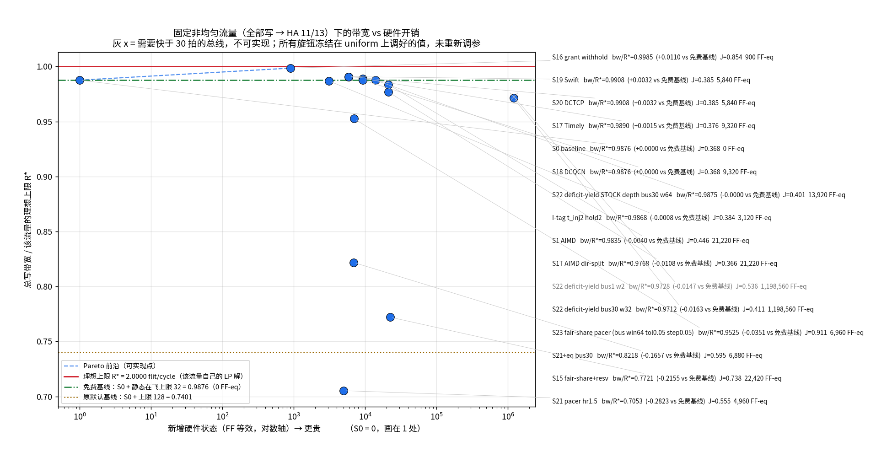
横轴是新增硬件状态（FF 等效，与前面同一个成本模型）， 纵轴是总写带宽 / R*。基线取免费修正后的 0.9876，因为拿 128 那条线作基线就是把免费的收益记在控制器账上。
| 方案 | 触发 | 带宽 / R* | 相对免费基线 | 100 拍窗 CoV | E-tag 绕环 | 硬件 FF-eq |
|---|---|---|---|---|---|---|
| S16 grant withhold | local | 0.9974 | +0.0098 | 0.0707 | 35 | 900 |
| S19 Swift | delay | 0.9908 | +0.0032 | 1.2417 | 4,257 | 5,840 |
| S20 DCTCP | ecn | 0.9908 | +0.0032 | 1.2417 | 4,257 | 5,840 |
| S17 Timely | delay | 0.9890 | +0.0015 | 1.2728 | 4,374 | 9,320 |
| S0 baseline | none | 0.9876 | +0.0000 | 1.3000 | 4,384 | 0 |
| S18 DCQCN | ecn | 0.9876 | +0.0000 | 1.3000 | 4,384 | 9,320 |
| S22 deficit-yield STOCK depth bus30 w64 | bus | 0.9875 | -0.0000 | 1.2071 | 4,450 | 13,920 |
| I-tag t_inj2 hold2 | local | 0.9868 | -0.0008 | 1.2571 | 4,469 | 3,120 |
| S29 scheduled reservation | cal | 0.9866 | -0.0010 | 1.1982 | 4,473 | 4,440 |
| S1 AIMD | bus | 0.9835 | -0.0040 | 1.0942 | 4,018 | 21,220 |
| S1T AIMD dir-split | bus | 0.9768 | -0.0108 | 1.2997 | 4,184 | 21,220 |
| S22 deficit-yield bus30 w32 | bus | 0.9712 | -0.0163 | 1.1782 | 5,003 | 1,198,560 |
| S28S explicit rate equal-share | bus | 0.9639 | -0.0237 | 0.3423 | 2,731 | 12,680 |
| S23 fair-share pacer (bus win64 tol0.05 step0.05) | bus | 0.9525 | -0.0351 | 0.2869 | 4,297 | 6,960 |
| S28 explicit rate (RCP) | bus | 0.9466 | -0.0409 | 0.8486 | 4,161 | 21,480 |
| S26 adaptive routing | local | 0.9334 | -0.0542 | 1.3750 | 5,258 | 1,560 |
| S21+eq bus30 | bus | 0.8218 | -0.1657 | 0.8232 | 1,527 | 6,880 |
| S15 fair-share+resv | bus | 0.7721 | -0.2155 | 0.5370 | 533 | 22,420 |
| S27 hop backpressure | occ | 0.7223 | -0.2652 | 1.1950 | 2,528 | 1,960 |
| S21 pacer hr1.5 | local | 0.7053 | -0.2823 | 0.8904 | 3,592 | 4,960 |
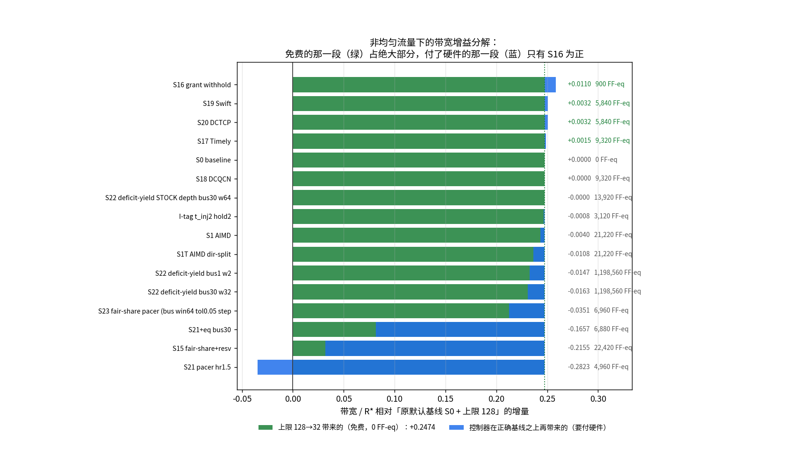
分解图把这一点画死：绿色是免费那一段（对每个方案都是 +0.2474），蓝色是控制器在正确基线之上再挣到的。 蓝色只有 S16 一个为正（+0.0098）， 其余从 0 一路负到 S21 的 −0.28。
hot 上的拥塞在目的地（HA 11/13 的下环口），
而 S16 是 receiver-driven：HA 自己扣下一部分授权不发，
源端拿不到授权就不会注入本来也下不了环的 flit。
其余方案要么是 sender-driven 的速率/窗口控制（信号要绕一圈回来，
且阈值挂在错误的资源上），要么是源端之间的公平化
（S22 / S23 / S15 / S21+eq）—— 而这里的失衡不在源端：
十个核的权利完全相同，均衡它们对下环口的拥塞毫无帮助，
反而因为让位/门控白扔槽位而亏带宽。
这解释了为什么 S15 在 hot 上亏 21.8%、S21 亏 28.6%。hot 是最极端的一点。把倾斜度 f 连续调起来
（每个核有 f 比例的写重定向到 HA 11/13，f = 0 就是 uniform、
f = 1 就是 hot），每个 f 的 R* 都用它自己的混合重解：
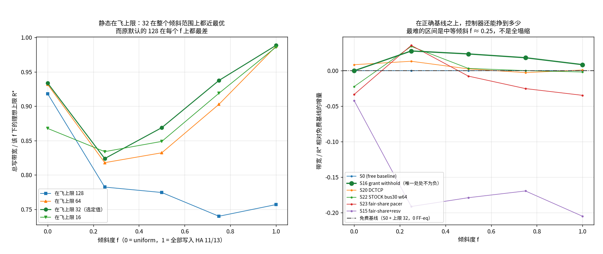
| 倾斜度 f | 该 f 的 R* | 上限 128 | 上限 64 | 上限 32 | 上限 16 |
|---|---|---|---|---|---|
| 0.00 | 5.7143 | 0.9182 | 0.9317 | 0.9337（最优） | 0.8678 |
| 0.25 | 3.5950 | 0.7825 | 0.8179 | 0.8239 | 0.8340（最优） |
| 0.50 | 2.9091 | 0.7746 | 0.8323 | 0.8689（最优） | 0.8489 |
| 0.75 | 2.3706 | 0.7401 | 0.9027 | 0.9374（最优） | 0.9188 |
| 1.00 | 2.0000 | 0.7570 | 0.9871 | 0.9885（最优） | 0.9859 |
上限 32 在五个倾斜度上四个最优、剩下一个（f = 0.25）差 1.2%， 而原默认的 128 在每一个 f 上都最差。 所以 32 不是又一个流量先验 —— 它是在整个倾斜范围上都成立的选择， 这正是撤下 S24/S25 时要求的那种性质。
| 方案（均在上限 32 上） | f = 0.00 | f = 0.25 | f = 0.50 | f = 0.75 | f = 1.00 |
|---|---|---|---|---|---|
| S0 (free baseline) | 0.9337(0.32) | 0.8239(0.92) | 0.8689(1.17) | 0.9374(1.28) | 0.9885(1.30) |
| S16 grant withhold | 0.9337(0.32) | 0.8519(0.55) | 0.8927(0.52) | 0.9558(0.46) | 0.9971(0.42) |
| S20 DCTCP | 0.9423(0.31) | 0.8373(0.89) | 0.8715(1.10) | 0.9348(1.22) | 0.9896(1.23) |
| S22 STOCK bus30 w64 | 0.9114(0.28) | 0.8583(0.78) | 0.8722(1.03) | 0.9376(1.15) | 0.9867(1.22) |
| S23 fair-share pacer | 0.9003(0.30) | 0.8598(0.53) | 0.8613(0.44) | 0.9123(0.41) | 0.9538(0.38) |
| S15 fair-share+resv | 0.8917(0.28) | 0.6324(0.39) | 0.6897(0.49) | 0.7678(0.60) | 0.7832(0.60) |
core_outstanding 固定为 128。
上限 32 的对照说明「静态收紧在飞窗口」本身能换带宽
（uniform 约 +1.1%，hot 更大），但那是灵敏度，不是新的出厂默认。
本报告前面所有章节、以及下面的读侧对照，一律按 outstanding = 128 读。数据：results/probe_ring2_hotbw.json（两轮上限 × 16 方案）、
results/probe_ring2_midskew.json（倾斜度扫描），
脚本 utils/probe_ring2_hotbw.py、
utils/probe_ring2_midskew.py、
utils/pareto_ring2_hotbw.py，
回归 test_window_controllers_inert_on_hot。
REQ core→HA +
CompData×2 HA→core，没有 DBIDResp、WriteData、Comp。
每核 outstanding 固定为 128。正式运行每核
K=5000。令 λc 为 core c 的读事务速率，pch 为该核访问 HA h 的实测地址混合。每条容量为 1 flit/cycle 的上环口、下环口和定向 hop 都形成约束：
Σc,h pch λc ·[REQ 路径经过资源 r] + 2pch λc ·[反向 CompData 路径经过 r] ≤ 1
闭批次中十核各有相同工作量，因而要解
max θ, λc ≥ θ；总读带宽是 2Σλc。
均匀 tiled 读得到 R*eq =
5.7143 flit/cycle，
绑定资源为 hop:1:0:dat, hop:17:18:dat, hop:11:10:dat, hop:7:8:dat。
如果改解 max Σλc，可到
6.4000，但速率 CoV 是
0.500，代价是把部分核速率压到 0；
它不是“所有核都完成”的带宽上限。热读相应为
R*eq=2.2222，
Rmax=3.0000，
后者速率 CoV=1.333。
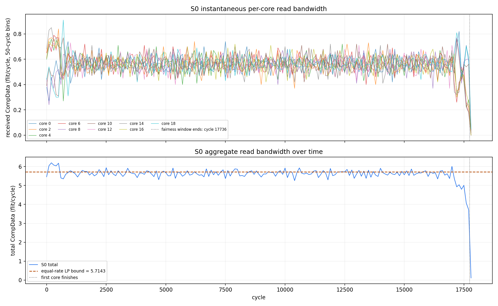
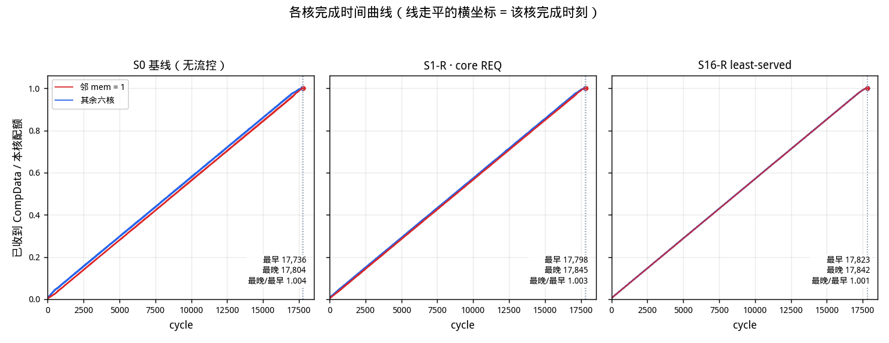
上图：各核已收到 CompData 占本核配额的比例；线走平的横坐标 是该核完成时刻。红 = 邻 mem = 1 的四核。
| workload | 读带宽 | 带宽 / R*eq | 核接收 CoV@100 | HA 发出 CoV@100 | max/min | 最忙 DAT hop | 利用率 | E-tag |
|---|---|---|---|---|---|---|---|---|
| uniform | 5.6164 | 0.9829 | 0.11634 | 0.12929 | 1.006 | 1:-1:dat | 0.9829 | 0 |
| hot | 2.2005 | 0.9902 | 0.25159 | 0.26992 | 1.134 | 11:-1:dat | 0.9935 | 942 |
uniform S0 距离等速 LP 上限 1.71%，100 拍窗 CoV 为 0.11634。HA 发出端 CoV=0.12929 与核接收端不相同， 差值来自路径时延、目的核下环仲裁和 E-tag 重绕，故本节以接收端为准。 uniform 在整个共同竞争期的整窗 CoV=0.00205、 max/min=1.0056，说明其问题主要是100 拍 内的抖动，不是长期速率分层；这与写侧 S0 的固定快/慢核分层不同。 hot 把两项问题都放大：两个 HA 出口持续争用少数反向 DAT hop， 位置优势不会随闭批次自动消失。uniform 的最忙 DAT hop 实际搬了 17,500 个 flit / 17,805 cycles，且 deflection=0、E-tag=0；因此 1.71% 缺口是该绑定 hop 的 305 个空 cycle（启动/排空和无缓冲环 局部仲裁形成的供给气泡），不是额外绕环占掉的容量。
| 方案 | uniform BW | BW/R* | uniform CoV@100 | hot BW | hot CoV@100 | 说明 |
|---|---|---|---|---|---|---|
| S0 | 5.6164 | 0.9829 | 0.11634 | 2.2005 | 0.25159 | 基线 |
| S1-R · core REQ | 5.6035 | 0.9806 | 0.10609 | 2.2094 | 0.26122 | 请求端 admission |
| S1T-R · core REQ | 5.6010 | 0.9802 | 0.11213 | 2.2048 | 0.23914 | 请求端按方向 admission |
| S1-R · HA DAT | 4.7148 | 0.8251 | 0.12893 | 1.8151 | 0.32995 | HA 总量 AIMD |
| S1T-R · HA DAT | 5.6085 | 0.9815 | 0.11793 | 1.9230 | 0.26363 | HA 按方向独立 AIMD |
读侧没有唯一的机械搬法，因此两种都测。协议角色保持的映射仍在 requester core 上限 REQ：它保住 S0 带宽（uniform 0.9977×、hot 1.0040×），但每事务只有 1 个 REQ，预算很少成为真正的 DAT 瓶颈，短窗 CoV 与 S0 基本相同。 payload-source 等价则把预算机搬到 HA DAT 出口；它确实直接控制 CompData，却把状态按“HA 节点/方向”聚合。它能平衡两个 HA 方向的失败， 不知道同一 HA 队列里哪个目的 core 已经领先；stock AIMD 还会因 HA 自己 board fail 惩罚受害 HA，故吞吐明显下降。S1T 的方向拆分只修正方向耦合， 两种映射都没有添加“目的 core”维度，因而都没有解决 per-core 短窗 CoV。
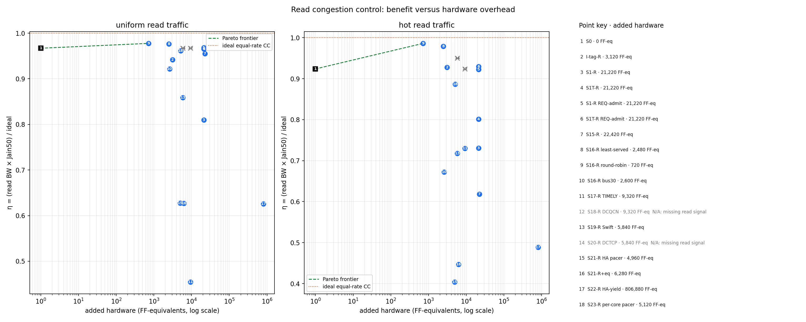
收益仍用单调标量
η=(总读带宽×接收端公平指数)/(R*eq×理想公平指数)；
η=1 是既达到等速 LP 上限又在整数约束下逐箱最均匀的理想控制器。
灰色 N/A 点保留在表里用于证明“原写代码会退化成什么”，但不进入 Pareto 前沿。
uniform 前沿：S0, S16-R round-robin；
hot 前沿：S0, S16-R round-robin。
| 方案 | 读带宽 | BW/R* | BW/S0 | CoV@100 | 相对理想 | η | 新增 FF-eq | 读侧有效性 |
|---|---|---|---|---|---|---|---|---|
| S16-R round-robin | 5.6120 | 0.9821 | 0.9992 | 0.06367 | — | 0.9776 | 720 | 有效 |
| S16-R least-served | 5.6044 | 0.9808 | 0.9979 | 0.06377 | — | 0.9765 | 2,480 | 有效 |
| S1-R REQ-admit | 5.6035 | 0.9806 | 0.9977 | 0.10609 | — | 0.9686 | 21,220 | 有效 |
| S0 | 5.6164 | 0.9829 | 1.0000 | 0.11634 | — | 0.9670 | 0 | 有效 |
| S18-R DCQCN | 5.6164 | 0.9829 | 1.0000 | 0.11634 | — | 0.9670 | 9,320 | N/A：缺少读侧信号 |
| S20-R DCTCP | 5.5878 | 0.9779 | 0.9949 | 0.10144 | — | 0.9669 | 5,840 | N/A：缺少读侧信号 |
| S1T-R | 5.6085 | 0.9815 | 0.9986 | 0.11793 | — | 0.9657 | 21,220 | 有效 |
| S1T-R REQ-admit | 5.6010 | 0.9802 | 0.9973 | 0.11213 | — | 0.9652 | 21,220 | 有效 |
| S23-R per-core pacer | 5.5847 | 0.9773 | 0.9944 | 0.11743 | — | 0.9615 | 5,120 | 有效 |
| S15-R | 5.5605 | 0.9731 | 0.9900 | 0.12707 | — | 0.9552 | 22,420 | 有效 |
| I-tag-R | 5.4729 | 0.9578 | 0.9745 | 0.11629 | — | 0.9419 | 3,120 | 有效 |
| S16-R bus30 | 5.2718 | 0.9226 | 0.9386 | 0.03001 | — | 0.9217 | 2,600 | 有效 |
| S19-R Swift | 5.0474 | 0.8833 | 0.8987 | 0.16234 | — | 0.8588 | 5,840 | 有效 |
| S1-R | 4.7148 | 0.8251 | 0.8395 | 0.12893 | — | 0.8098 | 21,220 | 有效 |
| S21-R HA pacer | 3.6742 | 0.6430 | 0.6542 | 0.15204 | — | 0.6272 | 4,960 | 有效 |
| S21-R+eq | 3.6722 | 0.6426 | 0.6538 | 0.15328 | — | 0.6266 | 6,280 | 有效 |
| S22-R HA-yield | 3.7154 | 0.6502 | 0.6615 | 0.19052 | — | 0.6260 | 806,880 | 有效 |
| S17-R TIMELY | 3.0502 | 0.5338 | 0.5431 | 0.40604 | — | 0.4546 | 9,320 | 有效 |
| 方案 | 读带宽 | BW/R* | BW/S0 | CoV@100 | 相对理想 | η | 新增 FF-eq | 读侧有效性 |
|---|---|---|---|---|---|---|---|---|
| S16-R round-robin | 2.2181 | 0.9981 | 1.0080 | 0.06671 | — | 0.9861 | 720 | 有效 |
| S16-R least-served | 2.2168 | 0.9976 | 1.0074 | 0.06488 | — | 0.9793 | 2,480 | 有效 |
| S20-R DCTCP | 2.2032 | 0.9914 | 1.0012 | 0.20327 | — | 0.9499 | 5,840 | N/A：缺少读侧信号 |
| S1T-R REQ-admit | 2.2048 | 0.9922 | 1.0020 | 0.23914 | — | 0.9298 | 21,220 | 有效 |
| I-tag-R | 2.2001 | 0.9900 | 0.9998 | 0.24072 | — | 0.9275 | 3,120 | 有效 |
| S0 | 2.2005 | 0.9902 | 1.0000 | 0.25159 | — | 0.9238 | 0 | 有效 |
| S18-R DCQCN | 2.2005 | 0.9902 | 1.0000 | 0.25159 | — | 0.9238 | 9,320 | N/A：缺少读侧信号 |
| S1-R REQ-admit | 2.2094 | 0.9942 | 1.0040 | 0.26122 | — | 0.9224 | 21,220 | 有效 |
| S23-R per-core pacer | 2.1345 | 0.9605 | 0.9700 | 0.26917 | — | 0.8867 | 5,120 | 有效 |
| S1T-R | 1.9230 | 0.8653 | 0.8739 | 0.26363 | — | 0.8014 | 21,220 | 有效 |
| S1-R | 1.8151 | 0.8168 | 0.8249 | 0.32995 | — | 0.7305 | 21,220 | 有效 |
| S17-R TIMELY | 2.0948 | 0.9427 | 0.9520 | 0.54395 | — | 0.7302 | 9,320 | 有效 |
| S19-R Swift | 2.0781 | 0.9351 | 0.9444 | 0.54914 | — | 0.7176 | 5,840 | 有效 |
| S16-R bus30 | 1.5084 | 0.6788 | 0.6855 | 0.06924 | — | 0.6725 | 2,600 | 有效 |
| S15-R | 1.9227 | 0.8652 | 0.8738 | 0.63663 | — | 0.6183 | 22,420 | 有效 |
| S22-R HA-yield | 1.2999 | 0.5850 | 0.5907 | 0.43758 | — | 0.4887 | 806,880 | 有效 |
| S21-R+eq | 1.1751 | 0.5288 | 0.5340 | 0.42228 | — | 0.4467 | 6,280 | 有效 |
| S21-R HA pacer | 1.0225 | 0.4601 | 0.4647 | 0.36642 | — | 0.4040 | 4,960 | 有效 |
数据：results/ring2_read_fair.json；
脚本：utils/dse_ring2_read_fair.py；
图片：results/ring2_read_s0_timeseries.png、
results/ring2_read_pareto.png；回归：
test_s16_read_unbounded_equals_s0、
test_s16_read_is_local_and_paces。
数据：results/ring2_write_fair.json
（K=20000、W=2、n_planes=1、
seed=0，生成于 2026-08-27T10:28:10Z）；
S22 硬件开销灵敏度 results/ring2_s22_cost.json。
回归：utils/verify_ring2_20.py。